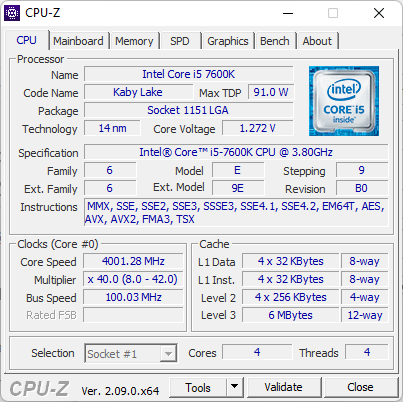
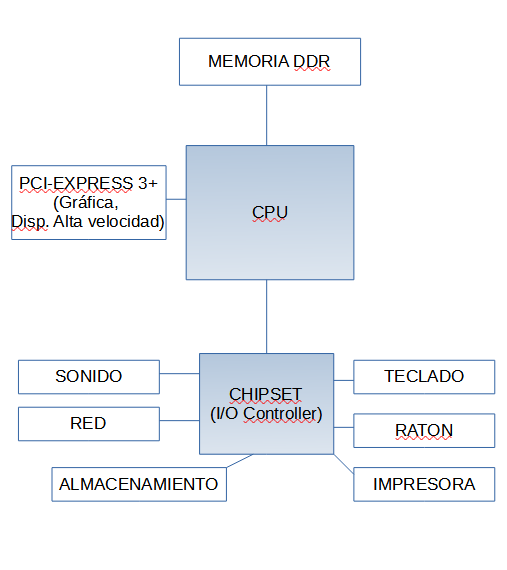

Ada quiere desarrollar aplicaciones porque, a través de muchos medios, le han dicho que es una profesión con muchas oportunidades laborales. Por su cuenta, ha aprendido conceptos de programación y se ve capacitada para comenzar a hacer programas. Con esta intención, acude a la empresa de Antonio, BK Programación, que tiene bastantes años de experiencia en el sector.
Nada más entrar, Ada queda sorprendida al ver la gran cantidad de equipamiento informático que Antonio le muestra en la empresa: armarios con cables y ordenadores dentro, impresoras, dispositivos de diferentes tamaños... cuando ella lo que esperaba era el típico puesto de trabajo. Antonio le explica que para aprender a programar, primero hay que aprender a distinguir y utilizar todos esos dispositivos, del mismo modo que un diseñador de automóviles debe conocer sus partes y saber conducir. No es lo mismo desarrollar aplicaciones para un móvil que para un ordenador personal, o una tablet.
También le comenta que es importante saber de qué manera están interconectados estos dispositivos, y las normas que rigen tanto su funcionamiento como su interconexión, igual que un diseñador de automóviles ha de conocer el código de circulación y las características de los distintos tipos de carreteras.
En esta unidad, conoceremos los componentes físicos (hardware) de un sistema informático, así como las formas de conectar los distintos dispositivos. También hablaremos de las normas de seguridad y prevención de riesgos básicas ligadas al trabajo realizado con sistemas informáticos.
Ada, María y Antonio se encuentran en la sala de reuniones de la empresa BK Programación. Están estudiando una serie de presupuestos que fueron solicitados a distintos proveedores de hardwarepara presentar los más adecuados a sus futuros clientes.
-Como veis, la configuración hardware que nos presentan en estos presupuestos dispone de la tecnología mas actual del mercado -dice María.
-Si todos aquellos que tuvieron algo que ver en la creación de los primeros ordenadores pudieran ver las máquinas que usamos hoy día quedarían más que sorprendidos -añade Ada.
-Es verdad. Sobre todo porque han aumentado sus prestaciones y ha disminuido su tamaño -replica Antonio.
María comenta que la informática es un mundo que cambia con mucha rapidez, que lo que hoy es una novedad, mañana puede estar desfasado. Y les cuenta "batallitas" de cuando ella empezó en esto de la informática y de las "maravillas" que se hacían con aquellos "cacharros". Cacharros que con el paso del tiempo se han ido amontonando en el polvoriento trastero de la empresa, componiendo hoy su particular museo.
Los Sistemas informáticos realizan tareas de tratamiento de la información. Estas tareas consisten fundamentalmente en almacenamiento, elaboración y presentación de datos. La definición formal de Sistemas informáticos es la siguiente: “Una o más computadoras, el software asociado, los periféricos, los terminales, los operadores humanos, los procesos físicos, los medios de transmisión de la información, etc., que constituyen un todo autónomo capaz de realizar un tratamiento de la información” Elementos de un sistema informático A partir de la anterior definición, un sistema informático se descompone en los siguientes elementos:
En un principio sorprende que el usuario humano se considere elemento de un sistema informático, pero sin el no tiene sentido, pues es quien lo crea, lo desarrolla y lo utiliza.
El hardware se considera elemento físico, en el sentido de que es algo físico que existe (un procesador, una memoria, una tarjeta gráfica...).
El software se considera elemento lógico, pues no existe físicamente. Un softwarerealiza operaciones aritméticas o lógicas, según se haya programado. Puede ser tanto un sistema operativo, encargado de que el ordenador funcione adecuadamente, o un programa específico, como un navegador web.
Un sistema informático puede estar compuesto por un sólo sistema físico (podemos llamarlo computador) o por varios de ellos interconectados en lo que llamamos red.
En esta unidad nos vamos a centrar principalmente en el hardware, así como en los componentes de un sistema de comunicación en red.
1.1.- Computadores digitales. Evolución.
En este tema se va a estudiar el hardware de los ordenadores actuales.
En la actualidad, los computadores que usamos son digitales. Solo manejan 0 y 1. Dentro de los microprocesadores, hay transistores, que permiten 2 opciones: encendido y apagado. Para entenderlo, podemos pensar en un interruptor de luz, si está encendido asignamos el 1, si está apagado asignamos el 0.
Estos dos estados se representan con un bit, 1 representa encendido, 0 apagado. De ahí que el sistema de numeración en informática sea el binario. De esta forma, las operaciones que realiza un microprocesador se realizan con circuitos electrónicos. Por ejemplo, sumar 2 bits equivale a un circuito en serie, y multiplicar 2 bits equivale a un circuito en paralelo.
Tipo de dispositivo electrónico semiconductor, capaz de modificar una señal eléctrica de salida como respuesta a una de entrada, sirviendo como amplificador, conmutador, oscilador o rectificador de la misma. Es de uso común en muchísimos aparatos, como relojes, lámparas, tomógrafos, celulares, radios, televisores y, sobre todo, como componente de los circuitos integrados (chips o microchips).
El procesador o microprocesador es la unidad de procesamiento principal de un ordenador, es por ello la unidad más importante, el «cerebro» de un ordenador. Es el encargado de ejecutar todos los programas, desde el sistema operativo hasta las aplicaciones de usuario
Es un sistema de numeración en el que los números son representados utilizando únicamente dos cifras: 0 (cero) y 1 (uno).
Un circuito en serie es una configuración de conexión en la que los terminales de los dispositivos (generadores, resistencias, condensadores, inductores, interruptores, entre otros) se conectan sucesivamente, es decir, el terminal de salida de un dispositivo se conecta a la terminal de entrada del dispositivo siguiente.
Un circuito paralelo es una conexión de dispositivos (generadores, resistencias, condensadores, bobinas, etc.) en la que los bornes o terminales de entrada de todos los dispositivos conectados coinciden entre sí, al igual que sus terminales de salida Siguiendo un símil hidráulico, dos depósitos de agua conectados en paralelo tendrán una entrada común que alimentará, así como una salida común que drenará ambos a la vez.
Un sistema digital binario es un conjunto de dispositivos que son destinados a la generación, transmisión, manejo, procesamiento y almacenamiento de señales digitales. También, y a diferencia de un sistema analógico, un sistema digital es una combinación de dispositivos diseñados para manipular cantidades físicas o información que se encuentre representada en forma digital; es decir, que solamente pueda tomar valores discretos.
La electrónica analógica es una rama de la electrónica que estudia los sistemas cuyas variables (tensión, corriente, etc.) varían de una forma continua en el tiempo y pueden tomar (al menos teóricamente) valores infinitos. En contraposición, en la electrónica digital las variables solo pueden tomar valores discretos y tienen siempre un estado perfectamente definido.
Una buena pregunta es por qué se utilizan los computadores digitales. Para ello, primero hay que entender cuál es la diferencia de digital y analógico.
Digital se identifica con discreto y finito.
Analógico se identifica con continuo e infinito. ¿Por qué?
Ejemplo: Entre los números 4 y 5, ¿cuántos números hay?
En digital o discreto, depende de la precisión de decimales; si se utilizan 2 decimales, hay 100.
4, 4.01, 4.02,..., 4.09, 4.10, 4.11,...,4.99, 5
En analógico o continuo, hay infinitos. Ejemplo: Entre 4 y 4.01 hay infinitos: (4.01, 4.001, 4.0001, 4.00001, 4.000001, 4.0000001, nunca se acabará, y todos están entre 4 y 4.01)
En el mundo analógico o continuo se pueden representar todos los números.
En el mundo digital o discreto solo se pueden representar algunos valores. Se cometen errores al convertir a digital los datos analógicos.
Por tanto, la pregunta, es, si en lo digital solo se pueden representar algunos valores, ¿por qué se utiliza en los ordenadores actuales? Porque el mundo digital es más exacto que el mundo analógico. De una forma técnica, se dice que la comunicación digital es más inmune al ruido que la comunicación analógica. Piensa que ajustas mejor la sintonía en una radio con botones digitales que en una analógica con una rueda. Igualmente, ajustas mejor el reloj digital que el analógico. Además, es más económica (en precio) la comunicación digital.
Conclusión
Los ordenadores actuales son digitales, pues, aunque no pueden representar todos los datos, la información representada es más exacta y se obtiene de forma más sencilla y rápida.
Cuarta generación 1975 - hoy. Arquitectura Von Neumann
Aparece el microprocesador. En una sola pastilla se encuentran todos los circuitos integrados que realizan todos los cálculos.
Esta arquitectura es la que se sigue utilizando hoy día, con algunas modificaciones.
Quinta generación 1985 - hoy
Basados en inteligencia artificial y sistemas expertos. Los ordenadores aprenden de sus propios errores y cálculos anteriores. Esta idea sigue en desarrollo, en combinación con la mejora continua de las arquitecturas anteriores, pero a día de hoy no se ha completado su desarrollo independiente.
Es un componente electrónico utilizado para amplificar, conmutar, o modificar una señal eléctrica mediante el control del movimiento de los electrones en un espacio vacío a muy baja presión, o en presencia de gases especialmente seleccionados.
Es una estructura de pequeñas dimensiones de material semiconductor, habitualmente silicio, de algunos milímetros cuadrados de área), sobre la que se fabrican circuitos electrónicos generalmente mediante fotolitografía y que está protegida dentro de un encapsulado plástico o de cerámica. Es capaz de integrar enormes cantidades de transistores.
Para saber más
Para obtener más información sobre las generaciones primera y segunda, ver: ENIAC en la wikipedia
John Von Neumann diseño esta arquitectura, su gran novedad fue que se introdujo una memoria llamada memoria principal (o memoria RAM) donde se guardan todos los datos y todas las instruccionesde los programas. La memoria no los diferencia, siendo el procesador el que los tiene que diferenciar.
Esta arquitectura de Von Neumann se ha utilizado desde el primer PC creado por IBM en el año 1981.
Arquitectura de un computador
CPUo procesador.
Memoria principal.
Unidad de entrada/salida (Un disco duro se considera un componente externo de entrada/salida de datos, así como un monitor, un teclado...)
Buses. Por donde circulan los datos e instrucciones, entre los distintos componentes. En la imagen siguiente, están representados por las flechas.
Observaciones: La memoria principal, es la memoria RAM. Los discos duros, forman parte de la unidad de Entrada/Salida. También reciben el nombre de memoria auxiliar, para distinguirlos de la memoria principal.
La memoria central, conocida como RAM, es la encargada de almacenar los datos y las instrucciones de los programas que deben ejecutarse, así como toda aquella información que el sistema necesite para su funcionamiento. Está constituida por muchísimas celdas de igual longitud capaces de retener información en su interior mientras el ordenador se encuentre encendido. Cuando el ordenador se apaga, se pierde su contenido.
Llamamos registro a una celda de memoria con bastantes bits. Es decir, la memoria está formada por varios registros. Si el procesador es de 64 bits, todos los registros serán de 64 bits.
Para que la CPU pueda ejecutar un programa es necesario que esté alojado en su memoria principal.
Función de la CPU: Unidad Central de Proceso
El procesador es el principal componente del computador. Lo compone 2 partes principales: ALUy UC. Además, forman parte del procesador unos elementos para almacenar datos llamados registros y la memoria caché.
La Unidad de Control o UC es la que gobierna, la que se encarga de ejecutar los programas, controlando su secuencia, interpretando y ejecutando sus instrucciones. Se encarga también de controlar al resto de componentes; como los periféricos, la memoria, la información que hay que procesar, etc., a tenor de lo que van necesitando las instrucciones.
La Unidad Aritmético-Lógica o ALU es la encargada de los cálculos matemáticos y los cálculos lógicos necesarios para su funcionamiento.
Dentro de la CPU hay registros de memoria. En los registros se almacenan una instrucción o dato, almacenan la dirección de la siguiente instrucción. El objetivo es acceder menos veces a la memoria principal.
También dentro de la ALU se encuentra la memoria caché. La memoria caché es una memoria más rápida que la RAM y más lenta que los registros, pero con más capacidad que estos últimos. Su fin, es acceder menos veces a la memoria principal, que es más lenta, eliminando posibles cuellos de botella. La memoria caché es como una pequeña memoria RAM pero mucho más pequeña y rápida.
Ejemplo: Los procesadores Celeron iniciales no tenían memoria caché; por ese motivo eran mucho más baratos, pero más lentos.
Procesador de n bits
Los procesadores actuales son de 64 bits. Hace unos años eran de 32 bits. ¿Qué significa?
Si un procesador es de 64 bits, significa que los datos o instrucciones tienen una longitud de 64 bits. Como en los registros se guardan esas instrucciones, cada registro tiene 64 bits. Se dice que la longitud de palabra es 64 bits.
Matemático húngaroestadounidense que realizó contribuciones fundamentales en física cuántica, análisis funcional, teoría de conjuntos, teoría de juegos, ciencias de la computación, economía, análisis numérico, cibernética, hidrodinámica, estadística y muchos otros campos. Página de wikipedia sobre von neumann
Memoria primaria, memoria principal, memoria central o memoria interna es la memoria de la computadora donde se almacenan temporalmente tanto los datos como los programas que la unidad central de procesamiento (CPU) está procesando o va a procesar en un determinado momento.
Un dato es una representación simbólica (numérica, alfabética, algorítmica, espacial, etc.) de un atributo o variable cuantitativa o cualitativa. Los datos describen hechos empíricos, sucesos y entidades.
Se denomina instrucción en informática al conjunto de datos insertados en una secuencia estructurada o específica que el procesador interpreta y ejecuta.
En computación, la unidad aritmética lógica o unidad aritmético-lógica, también conocida como ALU, es un circuito digital que realiza operaciones aritméticas (suma, resta) y operaciones lógicas (SI, Y, O, NO) entre los valores de los argumentos.
Son iguales las longitudes de los registros, el ancho de la memoria caché, el ancho de la memoria principal, el ancho del bus de direcciones y el ancho del bus de datos. Hay que entender que cada uno de esos bits es una conexión, y todos los componentes deben ajustarse a ese número de conexiones. En el caso de las computadoras de 64 bits, ese es el numero que hemos de tener en cuenta en todos estos sitios.
Los sistemas de Entrada/Salida son circuitos electrónicos que permiten el intercambio de información entre la CPU y los periféricos. Las unidades de entrada se utilizan para cargar programas y datos en la memoria principal desde los periféricos de entrada, y las unidades de salida se utilizan para sacar los resultados de los procesos realizados a través de los periféricos de salida.
Los discos duros o medios de almacenamiento, desde el punto de vista de Von Neumann, son dispositivos de entrada/salida.
Para entender porque es así, observar que un ordenador, se puede arrancar sin disco duro (por ejemplo, se puede arrancar con un pendrive con una imagen autoarrancable de Linux). Sin embargo, un ordenador, no puede arrancar sin memoria RAM.
Buses del sistema
Los Buses del Sistema son el conjunto de circuitos eléctrónicos que conectan la CPU con el resto de unidades para comunicarse entre sí. Cada bus es un conjunto de conexiones o pistas de un circuito integrado, que permiten la transmisión en paralelo de la información entre los diferentes componentes del ordenador.
Hay tres clases distintas de buses:
El bus de datos e instrucciones. Utilizado para trasladar tanto datos como instrucciones desde la memoria principal al resto de componentes del ordenador y viceversa.
El bus de control. La CPU transmite por él las órdenes (microórdenes) al resto de unidades, y recibe de ellas señales indicando su estado.
El bus de direcciones. Por él se transmiten las direcciones de destino de los datos que se envían por el bus de datos.
En un procesador de 64 bits, el ancho de los buses de datos y direcciones son de 64 bits. Eso quiere decir, que son como una autopista de 64 carriles, circulando en paralelo, donde por cada carril circula un bit de los 64 que forma una palabra. Estas palabras, pueden ser el contenido del registro de instrucción, o el de un registro de la caché o de la memoria principal.
Veamos el siguiente ejemplo para entender la función de los 3 buses: cuando la CPU tiene que obtener (leer) la información contenida en una posición de memoria, debe indicar su dirección mediante el bus de direcciones, pero también debe mandar una señal de lectura por el bus de control. A continuación, recibe dicha información por el bus de datos.
Cuando se ejecuta un programa, el programa se carga en memoria. Las instrucciones del programa se ejecutan de forma secuencial, leyéndose de posiciones consecutivas de memoria. Tras ejecutar la instrucción que se encuentra en la dirección "x" se ejecuta la instrucción que está en la dirección "x+1" y así sucesivamente.
La ejecución de una instrucción conlleva realizar una secuencia de pasos.
Cada uno de estos pasos puede necesitar un número diferente de ciclos de reloj dependiendo de su propia complejidad y de los recursos que la CPU tenga para su realización.
Fases en la ejecución de una instrucción
Una vez acabada una instrucción, para ejecutar la siguiente se realizan dos fases:
Fase de búsqueda. Consiste en localizar la instrucción en memoria y llevarla a la Unidad de Control.
Para ello, un registro llamado Contador de Programa (CP) almacena la dirección desde donde tiene que ser leída la siguiente instrucción. Se manda la señal correspondiente para leer la instrucción desde la memoria, y se trae por el bus de datos la instrucción a la CPU. Esta instrucción se almacena en un registro llamado registro de instrucción (RI).
Fase de ejecución. Consiste en realizar el cálculo en la ALU.
La ALU realiza operaciones sencillas, como la suma o multiplicación. Para ello, tiene 3 registros importantes: los 2 registros operandos, donde serán introducidos los datos, y un registro acumulador (AC), donde será almacenado el resultado.
Jerarquía de memoria
En el ordenador hay muchos tipos de memoria:
Registros de memoria dentro del procesador o CPU.
Memoria caché habitual dentro de la CPU.
Memoria RAM o principal.
Discosduros.
¿Por qué hay tantos tipos de memoria?
Por un compromiso entre coste y velocidad, a mayor velocidad, el precio también es mayor.
Ejemplo: La memoria RAM es mucho más rápida que el disco duro, pero es mucho más cara. Por 50€ se pueden comprar 8 GBs de RAM o un disco duro de 1 TB.
Se consideran periféricos a las unidades o dispositivos de hardware a través de los cuales el ordenador se comunica con el exterior, y también a los sistemas que almacenan o archivan la información, sirviendo de memoria auxiliar de la memoria principal
Es un dispositivo de almacenamiento de datos que emplea un sistema de grabación magnética para almacenar y recuperar archivos digitales. También se utiliza para almacenar el sistema operativo y facilitar el arranque de la computadora.
La memoria USB, conocida también con los nombres locales: lápiz de memoria, dedo, pincho, lápiz USB, memoria externa, pendrive, memoria flash, memocápsula, memorín o llave maya, es un tipo de dispositivo de almacenamiento de datos portátil que utiliza circuitos de estado sólido para guardar datos e información.
Sistema Operativo de código abierto
Una memoria autoarrancable es aquella que es capaz de poner en marcha un ordenador por sí misma, sin necesidad de disco duro, por tener almacenada la imagen de arranque de un sistema operativo.
A la hora de trabajar con ordenadores, se utilizan expresiones para medición que pueden dar lugar a confusiones, tanto por las distintas unidades utilizadas como por el distinto uso que se puede dar a una misma unidad. Vamos a distinguir tres grupos: Almacenamiento, Procesamiento y Transmisión de datos.
Almacenamiento
Esta unidad nos servirá para medir la capacidad de guardar información en nuestros dispositivos.
La unidad de almacenamiento elemental en informática es el bit. Es bien sabido que los ordenadores son, esencialmente complejos circuitos electrónicos que transmiten corriente o no, y según sea una cosa u otra, el computador actuará en consecuencia. Así pues, la medida más básica de almacenamiento en un computador es "encendido/apagado", lo cual se puede traducir en "1/0". Existe un sistema numérico, el binario, capaz de representar datos, realizar operaciones entre ellos, etc. Por tanto, este sistema es óptimo para representar y operar estos datos elementales.
Dicho todo esto, el bit es un dígito que almacena información en sistema binario, es decir, únicamente 1 ó 0. Esta unidad es demasiado pequeña para poder representar nada por sí sola, así que se agrupa en conjuntos. Lo habitual es hacerlo en grupos de 8 bits, lo que llamaremos byte. Con uno de estos bytes podremos representar un máximo de 256 combinaciones de datos distintos (28). Esto, por ejemplo, se podría utilizar para representar caracteres alfanuméricos.
Las unidades de almacenamiento más usadas son las siguientes:
Unidades de Almacenamiento
Unidad
Conversión
Equivalencias
Posible utilidad
bit
Dígito binario, on/off, 1/0
Byte (B)
x8
8 bits
Caracteres alfanuméricos
KiloByte (KB)
x 1024 (210)
1.024 Bytes; 8.192 bits
Párrafos de texto
MegaByte (MB)
x 1024 (210)
1.024 KB; 1.048.576 Bytes
Libros, imágenes, canciones
GygaByte (GB)
x 1024 (210)
1.024 MB; 1.048.576 KB; 1.073.741.824 Bytes
Películas en alta definición, almacenamiento USB, discos SSD, RAM, almacenamiento en la nube
Todas las palabras habladas por la humanidad en toda su historia
Existen otras unidades como el ZettaByte y el YottaByte, pero son tan inmensas que no tiene mucho sentido explicarlas. Se calculan volviendo a multiplicar por 1024 el EB.
El hecho de multiplicar por 1024 (210) las unidades se debe a que los bits son binarios, no decimales, y no podemos multiplicarlo por 10 porque dejaría de tener sentido como agrupación de datos binarios.
Procesamiento
La unidad más utilizada cuando hablamos de procesamiento sirve para medir su velocidad, y es el Hercio. 1 Hz es una unidad de frecuencia, que equivale a un ciclo o repetición de un evento por cada segundo. Es decir, algo que trabaje a 500 MHz significará que es capaz de repetir ese evento 500 millones de veces por segundo. Las unidades son similares a las utilizadas en la tabla anterior para el almacenamiento, pero en este caso se multiplica por 1000, no por 1024. Así pues, tendremos algo así:
También es bastante utilizada la unidad FLOPS, "Operaciones de punto flotante por segundo". Las operaciones de punto flotante son aquellas que se realizarían sobre números reales, no naturales. La cantidad de estas operaciones que es capaz de realizar en cada segundo una máquina da una buena medida de su capacidad de proceso. Esta medida se utiliza para, por ejemplo, la comparación de velocidad de supercomputadores, que hoy día se mide en PetaFLOPS.
Transferencia de datos
En informática, los datos están continuamente viajando entre los distintos componentes del ordenador. La velocidad a la que lo hacen es muy importante para conocer la eficiencia de nuestros equipos.
Al igual que en el almacenamiento, tenemos que la información más básica es el bit. Como hablamos de velocidad y no de cantidad, la unidad elemental de transferencia será el bit por segundo (bps). Del mismo modo, si queremos establecer una cierta correlación con las unidades de almacenamiento antes utilizadas, podemos también utilizar el Byte por segundo (B/seg). Nótese que no son equivalentes, ya que 1 B/seg = 8 bps.
Transferencia de datos en bytes/seg (dispositivos)
Unidad
Conversión
Equivalencias
Posible utilidad
Byte/seg
x8
8 bps
Velocidad de conexión para sensores de baja frecuencia
Velocidad de transferencia de datos en futuras redes 6G
Unidad básica de almacenamiento. Puede tomar 2 valores, 1 o 0.
Un sistema de numeración es un conjunto de símbolos y reglas de generación que permiten construir todos los números válidos.
Alfanumérico es un término que se utiliza para identificar letras del alfabeto latino y cifras del sistema de numeración indoarábigo.Un carácter alfanumérico es un término informático referente al conjunto de caracteres numéricos y alfabéticos de los cuales dispone una computadora u ordenador. Ocurre correspondencia casi exacta con los caracteres .
Un hercio representa un ciclo por cada segundo, entendiendo ciclo como la repetición de un suceso
Una tarjeta gráfica o tarjeta de video es una tarjeta de expansión de la placa base de la computadora que se encarga de procesar los datos provenientes del procesador y transformarlos en información comprensible y representable en el dispositivo de salida (por ejemplo: monitor, televisor o proyector).
Hemos visto en anterior apartado que la CPU o Unidad Central de Proceso es uno de los elementos principales en la arquitectura de Von Neumann. El microprocesador representa la CPU. Se trata de un microchip compuesto de millones de microcomponentes recogidos en una cápsula, normalmente cerámica, de la que salen una serie de patillas o contactos, que hay que acoplar en el zócalo de la placa base.
Existen varios fabricantes de microprocesadores para ordenadores personales, siendo los más importantes AMD e Intel, por ser los que más investigan y más productos sacan al mercado.
En relación con el funcionamiento debemos destacar la existencia de arquitecturas de 32 bits o 64 bits. Hoy día, todos los procesadores que se fabrican utilizan 64 bits.
Los procesadores producen tanto calor que pueden llegar a quemarse si no se adoptan las medidas para evitarlo. Para refrigerar la CPU se incorpora un sistema de enfriamiento con un ventilador y un disipador encima del procesador. En las torres, se suelen instalar algún ventilador adicional. Existen sistemas alternativos como por ejemplo la refrigeración líquida.
Características que definen un procesador
La velocidad o frecuencia de reloj
Se mide en Hz (hercios), hoy día en GHz, es decir los ciclos por segundo u operaciones elementales. Por ejemplo, un procesador a 3 Gigahertzios = 3 x 109 Hz = 3.000.000.000 Hz significa que realiza 3.000 millones de operaciones elementales en 1 segundo. Este valor por sí solo no determina la capacidad de un procesador, ya que hay otros muchos factores a tener en cuenta.
Tecnología de fabricación
La tecnología de fabricación, que se mide en nanómetros, utiliza una técnica llamada fotolitografía. Cuando nosotros hablamos de tecnología de fabricación estamos mencionando una medida utilizada para referirse al tamaño de los transistores que componen los procesadores, es decir, nos referimos a cómo de pequeño es el patrón usado por la tecnología. Cuanto menor sea el tamaño de los transistores, más podemos insertar. Esto permite también reducir la cantidad de energía eléctrica necesaria para comunicarlos, y por consiguiente disminuir el calor generado durante el funcionamiento del microprocesador. De forma que cuando sale una nueva generación de procesadores, disminuye este tamaño, consiguiendo realizar los mismos cálculos con menor consumo y menos calor. De hecho, este es uno de los avances tanto en el procesador como en la memoria que definen el cambio de generación, ya que de una a otra hay menor voltaje, menor consumo y como consecuencia, menor calor.
Por ejemplo, los procesadores más actuales de Intel, están fabricados en 5 nanómetros = 5 x 10-9 metros, y se espera que comience a trabajar con tecnología de 2nm durante 2024.
TDP
Es el consumo de energía máximo del procesador. Es un valor que ilustra el calor máximo teórico que un chip puede generar, midiéndose en vatios (w) o kilovatios (kw). Es un máximo; es decir, si nuestra CPU tiene un TDP de 100 W, significa que debemos tener en cuenta esta cantidad a la hora de instalar una fuente de alimentación adecuada, para evitar problemas. Si nuestra fuente de alimentación no suministra suficiente energía para todos los componentes de nuestro ordenador, éste no funcionará correctamente. Por otra parte, también es indicativo del calor que va a disipar nuestro procesador, siendo por ejemplo más adecuadas las CPU con TDP bajo para portátiles y cajas pequeñas.
Hacia el 2004 se alcanzó la velocidad máxima de los procesadores, debido al calentamiento. A partir de ese momento, la mejora de las CPU se consigue incorporando varios núcleos en la CPU.
De esa forma, se puede ejecutar un proceso distinto en cada núcleo. Para PCs Intel y AMD tienen procesadores de gama alta de hasta 16 núcleos. Para servidores, los hay con hasta 64 núcleos.
En cada núcleo se puede ejecutar un proceso. En muchos procesadores, cada núcleo se divide en 2 hilos de ejecución. Los hilos sirven para que un proceso principal se subdivida en 2 subprocesos, y cada subproceso se ejecute en cada hilo.
Memoria caché del procesador. Niveles de la memoria caché
El objetivo de la memoria caché es acceder menos veces a la RAM. Para ello se guarda en la memoria caché, los datos que se utilizan con mayor frecuencia.
Su éxito se basa en la regla 80/20, que dice que el 20% de los datos se utilizan el 80% de las veces, y viceversa, es decir, el otro 80% de los datos se utiliza el 20% de las veces.
La memoria caché es mucho más rápida que la RAM pero más cara, por ir dentro del procesador.
En los procesadores actuales, hay hasta 3 niveles de caché: L1, L2 y L3 (level 1, 2 y 3)
La memoria L1, es única para el procesador. Se divide en dos, una para datos y otra para instrucciones.
La memoria L2, es por núcleo o para compartir entre algunos núcleos.
La memoria L3 es única para todo el procesador.
Siguiendo la jerarquía de niveles de memoria, sigue ocurriendo que a memoria más rápida, más cara y por tanto menor tamaño:
Tamaño de la memoria caché: L1 < L2 < L3
Velocidad de la memoria caché: L1 > L2 > L3
Precio de la memoria caché: L1 > L2 > L3
Ejemplos:
1. Procesador Ryzen 9 7950X tiene 3 niveles de caché:
L1: 1 MB (64 KB por núcleo). L2: 16 MB (1 por núcleo) y L3: 64 MB (compartida entre todos los núcleos)
Este procesador tiene 16 núcleos, y está construído con tecnología de 5nm de AMD.
Alcanza los 5,70 GHz de velocidad máxima (modo Turbo Boost), funcionando habitualmente a unos 4,50 GHz
2. Intel Core i9-13900KS tiene dos tipos de caché:
Smart Caché (36 MB) y una caché L2 de 32 MB.
Este procesador tiene 24 núcleos (8 de ellos de alto rendimiento), y está construido en tecnología de 10nm de Intel. Esto no hace que sea menos potente que el de AMD, por usar una tecnología más reducida. De hecho, sucede al contrario.
Este procesador alcanza una velocidad de 6 GHz en modo turbo.
Ejemplo de procesador funcionando en un ordenador

Captura CPU-Z - Federico Martínez Pérez(Todos los derechos reservados)
Existen aplicaciones, como CPU-Z, capaces de devolvernos abundante información acerca del procesador instalado en un equipo.
En la captura, se ve un procesador, Intel Core i5 7600K, de 4 núcleos, con 1 hilo de ejecución por núcleo, desarrollado con una tecnología de 14nm, y que se monta sobre Socket LGA 1151.
La velocidad de la CPU es de aproximadamente 400 Mhz.
Tiene caché L1 de 32KB para instrucciones y 32KB para datos (por cada núcleo), L2 de 256KB (también por núcleo) y L3 de 6 MB.
También podemos ver que tiene un TDP máximo de 91 W.
El zócalo de CPU (socket en inglés) es un tipo de zócalo electrónico (sistema electromecánico de soporte y conexión eléctrica) instalado en la placa base, que se usa para fijar y conectar el microprocesador, sin soldarlo lo cual permite ser extraído después.
La placa base, también conocida como tarjeta madre, placa madre o placa principal (motherboard o mainboard en inglés), es una tarjeta de circuito impreso a la que se conectan todos los componentes que constituyen la computadora.
Un disipador es un instrumento que se utiliza para bajar la temperatura de algunos componentes electrónicos. Su funcionamiento se basa en el principio cero de la termodinámica, transfiriendo el calor de la parte caliente que se desea disipar al aire. Este proceso se completa haciendo circular el aire, con ayuda de un ventilador adicional, permitiendo una eliminación más rápida del calor excedente.
La fotolitografía es un proceso empleado en la fabricación de dispositivos semiconductores o circuitos integrados. El proceso consiste en transferir un patrón desde una fotomáscara (denominada retícula) a la superficie de una oblea.
El núcleo de un procesador, también conocido como core, es una unidad de procesamiento individual dentro de la unidad central de procesamiento de una computadora. Cada núcleo funciona como una unidad de procesamiento completa, capaz de ejecutar instrucciones de manera autónoma. En otras palabras, un procesador multinúcleo tiene varios núcleos físicos o virtuales que pueden trabajar en varias operaciones simultáneamente.
El número de hilos en un procesador se relaciona directamente con la cantidad de tareas que pueden ejecutarse de forma pseudoparalela (es decir, de manera “simultánea” en términos prácticos). Por ejemplo, si un programa tiene una tarea multihilo (digamos, dos tareas), un procesador con dos hilos puede ejecutar esas tareas al mismo tiempo.
La memoria caché, también conocida como caché, es una memoria auxiliar de alta velocidad que almacena copias de datos y archivos a los que el usuario accede con frecuencia. Su objetivo principal es acelerar el acceso a la información y mejorar el rendimiento del sistema.
Debes conocer
Vínculos para investigar sobreprocesadores Intel y AMD
RAM significa Memoria de Acceso Aleatorio, lo que quiere decir que su funcionamiento está optimizado para guardar los datos de forma no contigua, facilitando el acceso inmediato a cualquier posición.
La memoria RAM representa a la memoria principal en la arquitectura de Von Neumann.
Físicamente, los módulos de memoria RAM suelen ser pequeñas tarjetas de circuito impreso a las que se sueldan los chips de memoria, por una o por ambas caras. Llevan en uno de sus cantos una fila de pines o contactos metálicos para insertarlos en los zócalos de memoria de la placa base.
Todas las memorias RAM actuales son SD-RAM,síncrona-dinámica: Dinámica porque necesita refrescar la información constantemente, y síncrona, porque lo hace a golpe de reloj.
La memoria RAM es volátil, lo que significa que cuando se apaga el ordenador se borra el contenido. Por eso sirve para almacenar instrucciones y datos en la ejecución de programas, pero necesitamos los discos duros para almacenar de forma permanente los resultados.
Los módulos de memoria actuales se encapsulan físicamente en los llamados módulos DIMM, o módulo de memoria de dos líneas, llamados así porque aprovechan las dos caras del módulo para incluir circuitos de memoria. En los ordenadores portátiles se utiliza el formato SO-DIMM, que es similar pero más pequeño.
Características de la memoria
Frecuencia o velocidad
Viene dada en MHz o GHz.
Ejemplo: Una memoria a 800MHz, va a 800.000.000Hz, que quiere decir que lleva a cabo 800.000.000 de ciclos en 1 segundo.
Las memorias actuales se denominan DDR, Doble Ratio de Datos, porque son capaces de realizar una doble transferencia de datos en cada ciclo de reloj, en ambos sentidos del bus (subida y bajada). Eso explica que cuando se nombra comercialmente un tipo de módulo de RAM se utiliza una velocidad de transferencia que suele ser del doble de la realmente utilizada por el módulo. Por ejemplo, un módulo DDR4 a 2400Mhz, realmente funcionará internamente a 1200Mhz.
De esta manera, se justifican algunas peculiaridades en la nomenclatura de los distintos módulos de memoria, que veremos más adelante.
Ancho de Banda. Cálculo de Transferencia de datos de la memoria
Se denomina ancho de banda de la memoria, a los datos que se pueden transferir en 1 segundo. Es decir, a la velocidad de transferencia.
Para calcular la transferencia de datos de una memoria, se multiplica la velocidad (frecuencia) de la memoria por el ancho o tamaño del bus de datos.
Los procesadores actuales son de 64 bits, y cada 8 bits representan un byte, por lo que el bus de datos es de 64 bits = 8 bytes. Por tanto, multiplicando la frecuencia de reloj por el tamaño del bus (8), obtendremos un valor de Bytes/segundo (normalmente, como son millones de bytes, se usan los MB/segundo)
Aún así, la nomenclatura oficial no utiliza esta unidad, sino que se habla de transferencias por segundo. Esto es así por la naturaleza de las memorias utilizadas actualmente, las DDR, que permiten la realización de dos operaciones de transferencia de datos simultáneamente.
De este modo, para referenciar a los distintos módulos de memoria RAM se utiliza una nomenclatura como la que se indica en la tabla, siendo PC4 tecnología DDR4 (o PC5 DDR5), y el número la velocidad en mega-transferencias por segundo (MT/s), no en MBytes/s
Es un número que significa el número de ciclos de reloj necesarios para acceder a la primera celda en una lectura o escritura. Por tanto, será mejor memoria, la que tiene un número menor de latencia.
Observación: No quiere decir, que cada celda necesite ese número de ciclos, sino solo el primer dato de una transferencia.
Ejemplo: Si la latencia es 5, para realizar la primera lectura se necesitan 5 ciclos, pero si realizamos 3 lecturas seguidas, se necesitan 7 ciclos.
Tabla DIMM SD-RAM
En la siguiente tabla, se visualizan algunas de las memorias SD-RAM que han existido, desde las más viejas a las más actuales.
De forma general, cada tipo mejora al anterior en doble velocidad y menor voltaje, por tanto el consumo es menor. La velocidad viene dada en Mhz, siguiendo la nomenclatura comercial de los módulos.
Módulos DIMM SD-RAM
Nomenclatura
Nº contactos
Nº muescas
Nº lecturas por ciclo
Voltaje
Mínima velocidad
Máxima velocidad
Nº contactos para portatil
DIMM-SDRAM
168
2
1
33
133
144
DIMM-DDR
184
1
2
2,5
200
600
200
DIMM-DDR2
240
1
4
1,8
333
1200
200
DIMM-DDR3
240
1
8
1,5
800
2400
204
DIMM-DDR4
288
1
16
1,2
1600
3200
260
DIMM-DDR5
288
1
32
1,1
4800
6200
262
Una memoria síncrona se refiere a un tipo de memoria que opera en sincronización con una señal de reloj externa; en el caso de las SDRAM, se sincroniza con el reloj del sistema para acceder y refrescar su contenido de manera eficiente.
La memoria dinámica es aquella que se adapta constantemente al tamaño y exigencias de los procesos, y, por tanto, tiene que estar en cambio constante y necesita actualizar o refrescar sus datos con bastante frecuencia.
La latencia en la memoria RAM se refiere al tiempo que tarda la RAM en responder a una solicitud de acceso a los datos almacenados en ella. En términos más específicos, la latencia CAS mide el número de ciclos de reloj desde que se solicita leer un dato hasta que esa información está disponible. Cuanto menor sea la latencia, más rápido será el acceso a la información
Aunque de forma corta, digamos DDR4 o DDR5, todas son DIMM-SDRAM.
Podemos ver en la imagen que todas las DDR, sean del tipo que sean, tienen 1 muesca. Pero esta muesca está en distinto sitio. Esto es lo que hay que tener en cuenta, a la hora de instalar una memoria. Si introducimos una memoria errónea en una ranura de memoria, no funcionará, y podrían dañarse tanto la memoria como la placa base.
Consiste en habilitar dos canales paralelos de transmisión de datos entre el controlador de memoria y la RAM. Los dos módulos de memoria han de ser idénticos: fabricante, capacidad, velocidad y latencias.
Se dobla el ancho de banda, es decir, la transferencia de datos.
Ejemplo, utilizando memoria DDR400 con doble canal, se alcanzan tasas de transferencias de 6400 MB/s (400 x 8 x 2 MB/s)
Normalmente, en las placas base vienen por colores; de forma que hay que poner las memorias iguales en las ranuras de igual color. Esto hay que comprobarlo en el manual de la placa base.
Las cajas de ordenador, tienen definidas sus propias características de tamaño, forma, capacidad, etc. Así que al montar un ordenador, podemos elegir alguno de entre los siguientes (entre otros):
Minitorre o Semitorre: La diferencia entre ellas está en su altura que depende del número de bahías de 5 pulgadas y cuarto de que disponga. A mayor número de bahías más dispositivos podrá contener y más aumenta su altura. Suelen tener entre 2 y 4 bahías, respectivamente.
Sobremesa: Son similares a las minitorres, pero se colocan de forma horizontal. Eso obliga a rotar 90 grados los dispositivos extraíbles de su frontal.
Barebone y Slim: Son cajas de pequeño tamaño diseñadas sobre todo para ocupar poco espacio. Esto conlleva que su interior admite pocos dispositivos, o ninguno, pero esto se intenta compensar aumentando el número de conectores para dispositivos externos.
En el panel trasero se pueden ver los conectores que asoman directamente desde la placa base y desde las tarjetas de expansión, así como la toma de corriente eléctrica y la salida de ventilación de la fuente de alimentación.
El panel trasero de un computador es la zona de la placa base donde se concentran los conectores exteriores del ordenador. Generalmente, se encuentra en el extremo izquierdo de la placa En este panel se encuentran los puertos para conectar dispositivos como teclados, ratones, monitores, impresoras, USB, audio, entre otros
La función principal de una fuente de alimentación es transformar la corriente alternaAC que llega del exterior (en Europa 230 V) a corriente continuaDC, con voltajes inferiores.
Los voltajes de salida en la fuente de alimentación son:
+12 V: Esta tensión de alimentación la emplean los ventiladores, la disquetera, los discos duros, etc…
+5 V: Empleada por gran parte de los circuito de la placa base y por los puertos USB.
+3,3 V: Empleada por algunas tarjetas de expansión y algunos tipos de memoria.
-12 V: En desuso, algunos puertos serie.
-5 V: En desuso. Antiguas tarjetas de expansión ISA.
La característica más importante de una fuente, es la potencia máxima suministrada. Tendremos que tener en cuenta el hardware conectado al equipo, para el cálculo de la potencia necesaria. Una fuente con potencia insuficiente puede causar problemas de mal funcionamiento y hasta dañar el equipo. Las fuentes estándar de hoy día suelen generar sobre 500 watios (500 W). Existen páginas web que nos ayudan a calcular la potencia necesaria para hacer funcionar un equipo, según sus componentes.
Conectores de la fuente de alimentación
En este apartado, se explica la función de los distintos conectores que hay en una fuente de alimentación, que también es muy importante a la hora de escoger una fuente adecuada a nuestras necesidades. Por ejemplo, no podremos montar nuestro equipo si la fuente seleccionada no tiene conectores PCI-Express y queremos incluir una gráfica potente; como tampoco podremos hacer funcionar el equipo si nuestra CPU necesita un conector específico de 8 pines y nuestra fuente sólo tiene uno de 4.
Con estos conectores daremos corriente a la placa base y al resto de componentes: discos duros, unidades de DVD, ventiladores adicionales..
ATX versión 1.0 (aproximadamente 1995-2006)
Conector principal de 20 pines: (2 filas de 10 pines) que da corriente a toda la placa base.Se usaba en modelos antiguos, hoy día se suele utilizar el extendido de 24 pines, que veremos más adelante.
Conector auxiliar de 12v: Sobre el año 2000, se añadió conector de 12 voltios con 4 pines, también recibe el nombre de conector del procesador o conector P4 (Pentium 4, pues se introdujo cuando apareció). Este conector está cerca del procesador para ampliar corriente al procesador. Se diferencia porque tiene 2 hilos amarillos y 2 negros. Este conector no lo tienen algunas placas muy antiguas.
ATX versión 2.0 (desde año 2004 hasta la actualidad)
Se amplió el conector principal a 24 pines o 20+4 a partir de los procesadores de doble núcleo. Las fuentes lo traen en 2 conectores separados (20 + 4), para ser compatibles tanto con placa ATX 1.0 como con placas ATX 2.0.
De esta forma, si tenemos un PC antiguo y se estropea la fuente, podemos comprar una fuente moderna pues será compatible.
Conector auxiliar de 12 v con 4+4 pines. Este conector ha pasado de 4 a 8 pines, viene en forma de 2 conectores por compatibilidad con las placas base antiguas.
Conector para tarjetas gráficas PCI-Express de 6 u 8 pines. Para dar corriente adicional a las tarjetas gráficas potentes.
No lo tienen todas las tarjetas gráficas, ni todas las fuentes de alimentación. No es obligatorio que si lo tiene la tarjeta, se utilice, pero es lo recomendable para que la tarjeta pueda utilizar su potencia máxima.
La corriente alterna (CA) es un tipo de corriente eléctrica que cambia periódicamente de dirección. Su magnitud y polaridad oscilan de manera regular y cíclica, y se representa mediante ondas sinusoidales en un gráfico. Esto hace que sea poco útil para usarla con circuitos electrónicos.
La corriente continua (CC), también conocida como corriente directa (CD), es un flujo unidireccional de carga eléctrica a través de un conductor. En la corriente continua, los electrones se mueven siempre en la misma dirección, desde una zona de carga negativa hacia una zona de carga positiva. A diferencia de la corriente alterna, que cambia de sentido periódicamente, la corriente continua mantiene su polaridad constante. Esto hace que sea muy adecuada para su uso con circuitos electrónicos.
El conector de cuatro pines, conocido como Molex 8981 Series, proporciona 12 voltios y 5 voltios, con una corriente máxima de 11 amperios por pin. Aunque ya no está disponible en la web de Molex, en muchas ocasiones podemos encontrarlo fabricado por otras marcas. Este conector se utiliza para alimentar dispositivos de bajo consumo, como discos duros o unidades ópticas.
El conector Berg es un tipo de conector eléctrico utilizado en diversas aplicaciones. Lleva el nombre de su inventor, el ingeniero alemán Fritz Berg, y también se conoce a veces como Sistema de Conectores Berg. El conector Berg es un diseño de dos piezas que consiste en un enchufe macho y una toma de corriente hembra. El conector de 4 pines se conoce comúnmente como conector de alimentación de disquete, ya que se utilizaba para conectar la unidad de disquete de 3.5 pulgadas a la fuente de alimentación.
El conector de alimentación SATA es un componente utilizado para suministrar energía eléctrica a los dispositivos conectados a través de la interfaz SATA.
Debes conocer
En los siguientes enlaces encontramos calculadoras de potencia, útiles para poder determinar cuánta potencia es necesaria para hacer funcionar un equipo según sus componentes:
La placa base (motherboard) es como un gran circuito impreso al que se conectan los demás componentes del ordenador.
Desde el modelo de Von Neumann, la placa base equivale a todos los buses de comunicación entre los distintos componentes. En la imagen siguiente, se ve un recorte ampliado de la imagen anterior. En ella se pueden ver las líneas impresas que son circuitos electrónicos y que representan esos buses.
Por esas líneas circula la corriente electrónica en pulsos que se traducen como 0 y 1; es decir, los bits.
Estructura de la placa base
A partir de la arquitectura de Von Neumann, mencionada anteriormente, el esquema de un ordenador ha evolucionado hasta el siguiente:

Federico Martínez Pérez(Dominio público)
Vemos como, sin abandonar la idea principal de Von Neumann, se agrupan los distintos componentes en torno a dos grandes bloques: el procesador o CPU, que se encarga de controlar y coordinar los dispositivos de más velocidad (tarjeta gráfica, Memoria RAM, etc.), y una unidad independiente encargada de controlar y coordinar a su vez el resto de dispositivos de entrada/salida del ordenador: discos duros, almacenamiento diverso, impresoras, teclado, ratón, comunicaciones, etc... Esta segunda unidad recibe la denominación de Platform Controller Hub (PCH), o Intel Controller Hub (ICH), en los ordenadores con procesador Intel, y Fusion Controller Hub (FCH) en los equipos con procesador de AMD.
Esta unidad o chip de control de Entrada/Salida, junto con el resto de circuitería de la placa base, indicando el modelo de zócalo para la CPU, el tipo y número de zócalos para memoria RAM, ranuras de expansión, conectores de periféricos (como almacenamiento, USB, audio) o la BIOS, y las especificaciones técnicas correspondientes, conforman lo que llamamos el chipset de la placa base.
Este esquema es la base sobre la que se construye posteriormente una placa base, ya que dicho componente es de una importancia y funcionalidad similares a las de un sistema nervioso.
En este otro esquema, obtenido del fabricante Intel, vemos como efectivamente seguimos respetando la arquitectura de Von Neumann, actualizándola según nuestras necesidades:
En este apartado, se van a estudiar las principales conexiones y componentes que hay en la placa base. Ello facilitará el montaje y el mantenimiento de un ordenador.
En la imagen siguiente se redondean con un número, los componentes principales, y se adjunta una tabla son sus nombres. También se puede consultar la misma imagen en modo interactivo aquí: Imagen interactiva sobre componentes de placa base
COMPONENTES TABLA BASE
ID
Componente
USO
1
Zócalo LGA 1151
Microprocesador Intel Core de 8ª y 9ª Generación
2
Chipset (Controller Hub)
Chipset Intel Z390
3
Zócalos DIMM DDR4
Memoria RAM DIMM DDR4
4
Ranuras PCI-Express
Las grandes son las ranuras PCI-Express 16x, y las pequeñas, 1x.
Se encarga de la conexión de todos los periféricos y almacenamiento. Es decir, se comunica con las ranuras de expansión y los conectores SATA, IDE, USB...
La importancia de este componente es tal que determina todo el diseño y arquitectura de la placa base al completo, de modo que dos placas de fabricantes diferentes que compartan el modelo de chipset se consideran equivalentes y totalmente intercambiables. La descripción de una placa base, en lo que respecta a sus componentes, es la descripción del chipset. Un chipset determina datos como los siguientes:
Zócalo de conexión de CPU
CPUs compatibles
Número y tipo de ranuras de RAM
Conexiones del panel trasero
Conexiones internas: USB, sonido, etc.
Ranuras de expansión: número y tipo
Conexiones de almacenamiento
BIOS
etc.
En el apartado anterior hemos detallado los componentes de un ejemplo de placa base, con el chipset Intel Z390; concretamente, una ASUS-Rog. Cualquier otra placa que comparta ese modelo de chipset se considera equivalente en cuanto a especificaciones técnicas se refiere; por ejemplo, eso pasa con la placa Gigabyte Z390 Gaming X, que puede verse en esta web: Página oficial de la placa base Gigabyte Z390 Gaming X
El Platform Controller Hub (PCH), también conocido como concentrador controlador de la plataforma, es un chip utilizado en placas base para coordinar y gestionar diversos dispositivos de entrada y salida. Antiguamente, se le llamaba Southbridge.
El Clear RTC Jumper (puente de reinicio del reloj en tiempo real) es un componente presente en algunas placas base. Su función es permitir el reinicio o la restauración de la configuración del reloj en tiempo real (RTC). El RTC es un circuito que mantiene la hora y la fecha incluso cuando la computadora está apagada. Si necesitas restablecer la configuración del RTC, puedes mover el jumper (un pequeño puente) en la placa base para borrar la información almacenada y restablecer los valores predeterminados.
La BIOS (Sistema Básico de Entrada-Salida) es un firmware almacenado en un chip de la placa base. Al encender un ordenador, la BIOS se ejecuta y reconoce los dispositivos conectados, como el procesador, la tarjeta gráfica, la RAM y las unidades de almacenamiento. Sin la BIOS, tendríamos solo una placa base, no un ordenador completo. Además, la BIOS proporciona información sobre posibles fallos de hardware al iniciar el PC.
El panel frontal de la placa base es un conjunto de pines que se encuentra en la placa madre de tu computadora. Su función es conectar los distintos componentes del gabinete, como el botón de encendido, los puertos USB y de audio. Por ejemplo, el conector del botón de encendido activa el encendido del ordenador
El conector AAFP (abreviatura de panel frontal de audio analógico) es un encabezado de 10-1 pines que te permite conectar los puertos de audio delanteros en la caja de tu PC directamente a la tarjeta de sonido o chip de la placa base. La mayoría de las carcasas tienen un conector para auriculares/micrófono de 3.5 mm en la parte frontal, junto a los puertos USB y los botones de reinicio y encendido. Al conectar el cable de audio desde la carcasa al conector AAFP en la placa base, puedes usar estos puertos frontales para conectar tus auriculares o micrófono en lugar de los puertos de audio traseros de la placa base.
El M.2, anteriormente conocido como NGFF (factor de forma de nueva generación), es una especificación para la ampliación con tarjetas de expansión interna de ordenadores y sus conectores asociados. Ofrece ventajas como ahorro de espacio, conexiones más sencillas, velocidades de transferencia superiores y menor latencia
Ministerio de Educación y Ciencia, modificada por Miguel Ángel García Lara(CC BY-SA)
Las placas ATX sustituyeron a las placas AT sobre el año 1995. A partir de entonces, se crea un panel de conectores, integrados en la propia placa base, que se llama panel trasero ATX, pues una vez colocada la placa base en el ordenador, asoman por detrás.
Por ejemplo, es recomendable utilizar los pendrive o discos duros externos en estos puertos USB integrados, en vez de en los frontales de la caja; pues no hay ningún hardware intermedio. Los USB frontales pertenecen a la caja, que se conectan a un conector interno de la placa base.
Se muestran a continuación 2 figuras de panel trasero ATX, con unos años de diferencia para comparar los conectores. Este primer panel, puede estar en placas de hace más de 15 años.
Un panel trasero más completo y actual lo tenemos en la siguiente imagen:
Observaciones sobre algunos conectores
Los puertos USB 2.0 normales son negros, y los USB 3.0 o 3.1 son azules. Los USB rojos, que hay en algunas placas, son de segunda generación, capaces de alcanzar 10 Gbps. Los puertos tipo C pueden ser USB 3.2 o 3.1, y alcanzan 10 Gbps o 20 Gbps (esta velocidad está indicada en el icono mostrado al lado de la conexión). Se hablará más a fondo de las conexiones USB posteriormente en esta misma unidad.
Para monitores, en la placa antigua hay una conexión que todavía podemos encontrar en modelos más modernos, la VGA, para garantizar la compatibilidad con monitores antiguos.
El puerto Firewire o IEEE 1394, se usaba para todas las cámaras de vídeo hace unos años, hoy día, solo lo usan algunas cámaras de alta gama. Vemos una imagen del conector a continuación:
El conector eSATA(external SATA), sirve para conectar un disco duro SATA, sin abrir el PC. En la siguiente imagen, vemos una conexión de este tipo (verde) junto a otras de tipo USB:
Por último, es importante mencionar la conexión de red Ethernet, que facilita la conectividad de nuestro equipo, y permitiéndonos por ejemplo conectarnos a Internet.
HDMI (High-Definition Multimedia Interface) es una norma de vídeo que permite conectar dispositivos de entrada y salida mediante un cable del mismo nombre. HDMI integra vídeo de alta definición y audio HD en un solo cable. Se utiliza para conectar TVs, monitores, consolas de videojuegos y laptops. En resumen, HDMI simplifica la conexión de dispositivos y ofrece calidad de audio y vídeo.
VGA (Video Graphics Array) es un estándar de conexión utilizado para transferir señales de vídeo desde una computadora hasta un monitor o proyector. Aunque ha sido superado por estándares más modernos como HDMI o DisplayPort, todavía se encuentra en dispositivos antiguos y sistemas de retroalimentación de video.
DisplayPort es una interfaz para la conexión de video y, opcionalmente, audio. Fue desarrollada por la VESA para conectar las tarjetas gráficas de las computadoras con los monitores. A diferencia del HDMI, el DisplayPort se centra en las necesidades específicas de las computadoras y ofrece ventajas como un mayor ancho de banda y la capacidad de transmitir audio sin compresión. En resumen, es un estándar versátil que simplifica la conexión entre dispositivos de visualización y las tarjetas gráficas.
DVI (Interfaz Visual Digital) es una interfaz de video diseñada para obtener la máxima calidad de visualización en pantallas digitales, como monitores LCD y proyectores digitales. Fue desarrollada por el consorcio Digital Display Working Group. El cable DVI es el único estándar que permite transmitir señales tanto digitales como analógicas con el mismo conector. En resumen, es una conexión versátil que se encuentra comúnmente en computadoras y monitores LCD.
El FireWire, también conocido como IEEE 1394, es un tipo de conexión que permite conectar en tiempo real diversos dispositivos digitales, como ordenadores, discos duros o cámaras digitales. Aunque ha quedado en desuso, fue diseñado por Apple en 1986 y se lanzó en 1995. Facilita la transferencia de datos a alta velocidad. Existieron versiones de 4, 6, 9 y 12 pines, siendo el de 6 pines el estándar. Aunque compitió con el USB, sus conectores eran distintos y no había margen de error al identificarlos. En resumen, el FireWire fue una alternativa al USB para intercambiar datos entre dispositivos, pero su uso se ha reducido con el tiempo.
eSATA (Serial ATA Externo) es una tecnología que permite conectar dispositivos de almacenamiento externos, como discos duros, a través de un puerto especial en la computadora. A diferencia de una conexión USB, el eSATA ofrece una mayor velocidad de transferencia de datos y un rendimiento más estable
Para saber más
Más información acerca de las conexiones digitales de audio en el siguiente enlace: S/PDIF
Raimond Spekking(CC BY-SA)
Para fijar el microprocesador, es muy importante fijarse en las posibles muescas, para colocarlo en el zócalo debidamente. Es de lo más delicado en el ordenador, y los principiantes, suelen estropear procesadores o placas base, sin opción de reparación.Desde el primer PC han existido muchos tipos de zócalos con sus respectivos modelos. Si tenemos, por ejemplo, una placa con zócalo LGA 1151, el procesador que utilicemos tendrá que ser compatible con ese zócalo. Con una breve búsqueda en Google, he obtenido el listado de esos procesadores compatibles: Listado de procesadores compatibles con LGA 1151
Para poner el procesador, se libera la palanca. Después, se fija el procesador, fijándose en los pines. Finalmente se baja la palanca que ajusta el procesador.
AMD utilizó esta tecnología hasta hace poco (hasta el socket AM4), pero cambió a la que veremos a continuación.
LGA (Los pines están en el zócalo)
El procesador tiene los contactos planos. Hay que tener cuidado de no torcer los pines del zócalo. Es un diseño más eficiente, económico y sencillo, menos propenso a averías.
Actualmente casi todos los procesadores utilizan LGA. En particular, Intel utiliza los siguientes zócalos:
LGA 1200 o H5, para los procesadores i5/i7/i9 de la familia Rocket Lake de Intel, de 10ª y 11ª generación, compatibles con RAM DDR4 de hasta 3200Mhz.
Se utilizan para insertar tarjetas gráficas, de sonido, capturadoras de vídeo, tarjetas USB. Es decir, gracias a las ranuras de expansión, podemos ampliar (extender) el ordenador.
Ejemplos: Tenemos una torre, y no tiene USB 3.0. Nos interesa instalarla, para utilizar dispositivos de almacenamiento de alta velocidad. En este caso, es posible poner en una ranura de expansión libre una tarjeta USB 3.0.
En la imagen, se muestra una tarjeta de red WiFi (inalámbrica), que serviría para dotar de esa conexión a un equipo que no disponga de ella.
Desde los primeros equipos, ha habido muchas ranuras de expansión distintas. En la imagen siguiente, se muestran algunas de las ranuras de expansión que se han utilizado tanto actualmente como en años previos.
En desuso(para mantenimiento, no vienen en placas actuales):
AGP(Puerto Gráfico Avanzado: solo se pueden conectar tarjetas gráficas). Alcanzó una velocidad de transferencia máxima de 2133MB/s
PCI de 32 bits: Gran estándar durante muchos años. Se conectan muchas tarjetas distintas. Alcanzó una velocidad de transferencia máxima de 266MB/s
AGP y PCI utilizan transferencia en paralelo. PCI 32 bits, significa que los datos son de 32 bits, y se envían simultáneamente por 32 líneas de datos.
PCI-Express. Las placas actuales suelen traer solo PCI-Express de distintas velocidades (físicamente distintas longitudes). Las más habituales son 16x, pero las hay 1x, 4x, 8x, 16x.
La diferencia es la longitud (así como la velocidad de transferencia), es decir, la 16x es más larga que la 4x, por lo que se puede instalar una tarjeta 4x en una ranura de 16x, pero no al contrario, y la velocidad de transferencia va acorde al número indicado, siendo 16x 4 veces más rápida que 4x, por ejemplo.
PCI-Express utiliza transferencia serie. Los datos se envían solo por una línea de datos, uno detrás de otro, a una velocidad muy alta.
PCI-Express 16X, significa que es 16 veces más rápida que PCI-Express 1x. (Además la ranura 16x es mucho más larga que la 1x).
Además, desde que salió PCI-Express, ha mejorado, por lo que hay 6 versiones: PCI-Express 1, PCI-Express 2 y así hasta PCI-Express 6.
Se diferencian en las velocidades admitidas; la más elemental, la 1.0, alcanzaba 4GB/s (con x16), mientras que la PCI-Express 6.0 llega hasta 128GB/s (también para x16).Se diferencian muy fácilmente y no es posible conectar un dispositivo en la ranura equivocada. Dada su elevada velocidad, se utilizan para dispositivos como tarjetas gráficas, discos duros...
AGP es un puerto situado en la placa base de una computadora, especialmente diseñado para conectar tarjetas gráficas. Su color suele ser marrón y es un poco más pequeño que los puertos PCI, con 32 pines de conexión (aunque este número puede variar). Este puerto proporciona una conexión directa entre el adaptador de gráficos y la memoria, permitiendo una transferencia rápida de datos para acelerar la salida de vídeo 3D. Se ha quedado obsoleto tras la llegada de PCI-Express.
Para saber más
Más información y detalles de velocidad de las distintas versiones en PCI-Express
1.8.4.- Conectores de almacenamiento.
En ellos se conectan discos duros, DVD, disqueteras:
IDE(en desuso) - Conector 40 pines. Antiguos dispositivos IDE (antiguos discos duros y DVD). Actualmente se utilizan en mantenimiento, pues ya no se venden estos dispositivos. En la siguiente imagen, en rojo y blanco.
SATA - Conector pequeño de 7 pines. Actuales discos duros, CD y DVD.
Estos conectores se unen con el dispositivo (disco duro, DVD) con dos cables como los que vemos a continuación (uno para datos y otro para alimentación):
También hemos de tener en cuenta que las conexiones SATA son capaces de alcanzar "sólo" 6 Gbits/s y muchos discos modernos con tecnología SSD alcanzan velocidades superiores, de modo que se han implantado conexiones para usar la tecnología PCI-Express con estos dispositivos más rápidos. Para optimizar las conexiones de dispositivos de almacenamiento se ideó la interfaz NVMe, que optimiza las características de la conexión PCI-Express para el uso de estos dispositivos.
En las siguientes imágenes, vemos un ejemplo de disco y conexión M.2, que son compatibles tanto con SATA como con NVMe, permitiendo así la conexión de dispositivos de diferentes prestaciones (y precios):
Otro formato diferente, permite conectar los dispositivos directamente a las ranuras de expansión PCI Express. Podemos ver un ejemplo de uno de estos dispositivos a continuación:
El conector IDE es un estándar de interfaz utilizado para conectar dispositivos de almacenamiento masivo de datos, como discos duros y unidades de CD/DVD/Blu-Ray, a la placa base de una computadora. Hay dos tipos principales de conectores IDE: IDE ATA (también conocido como IDE PATA) y SATA. El IDE ATA consta de 40 contactos en dos filas, mientras que el SATA tiene siete clavijas de datos y una clavija de alimentación. Aunque ha sido reemplazado por estándares más modernos, como el SATA, el conector IDE sigue siendo parte de la historia de la informática.
Un conector FDD (también conocido como conector de disquete) es un tipo de conector de computadora utilizado para conectar unidades de disco flexibles (FDD) a una computadora. Estos conectores suelen encontrarse en la parte posterior de la computadora y están formados por una serie de contactos metálicos y enchufes que permiten la transferencia de datos entre la computadora y la unidad de disco flexible. Cada conector FDD tiene un total de 34 contactos individuales que se conectan entre la computadora y la unidad de disco.
SATA es una interfaz de bus utilizada para transferir datos entre la placa base y diversos dispositivos de almacenamiento en una computadora. Conecta unidades como discos duros mecánicos, unidades SSD y lectores de unidades ópticas (CD, DVD o BluRay) directamente a la placa base. A diferencia del estándar anterior (IDE o PATA), SATA ofrece mayor velocidad, mejor funcionamiento con varias unidades conectadas y la posibilidad de conectar o desconectar dispositivos sin apagar la computadora. Es el estándar común para la mayoría de discos duros y unidades de almacenamiento, aunque su liderazgo está siendo desafiado por la tecnología M.2
NVMe es un protocolo de transporte y acceso al almacenamiento diseñado específicamente para unidades flash y SSD (discos de estado sólido) de última generación. Ofrece el rendimiento más alto y los tiempos de respuesta más breves para todo tipo de cargas de trabajo empresariales. A diferencia de los protocolos más antiguos, NVMe se beneficia tanto del almacenamiento de estado sólido como de las CPU de varios núcleos y la memoria actual. Además, permite analizar y manipular datos con eficiencia, lo que lo hace ideal para aplicaciones en tiempo real, inteligencia artificial, aprendizaje automático y análisis avanzados.
Para saber más
Aquí puedes ver más detalles sobre la conexión SATA.
En este enlace, podemos ver más información acerca de las conexiones M.2
Aunque la placa base tenga en el panel trasero ATX conectores de audio y conectores USB, las placas base deben tener conectores para ampliación.
Conectores USB
En la actualidad, se conectan tanto los puertos USB frontales de la caja como las conexiones de audio frontales. En la caja, están soldados los cables, con el conector, que hay que conectar en la placa base. Hay dos tipos de conector, los de USB 2 (ver imagen), y los de USB 3, un poco distintos (más conexiones), y siempre etiquetados en la placa y en el manual.
De forma análoga, el conector del audio frontal de la caja, se conecta en la placa en su conector (normalmente rotulado AAFP, o FP_Audio)
Ministerio de Educación y Ciencia(Dominio público)
Ministerio de Educación y Ciencia(Dominio público)
1.8.6.- Panel frontal.
En las cajas de los PC tenemos botones para encender el ordenador o reiniciar. Asimismo, tenemos led que se encienden al trabajar el disco duro, estar encendido el ordenador. Para que funcionen todos estos led, en la caja están soldados los led a cables. Esos cables, hay que conectarlos a la placa base. Estas conexiones reciben en su conjunto el nombre de “front panel“ o panel frontal. En todos los manuales de placa base están especificados donde realizar las conexiones.
Power SW: Botón Encendido. El más importante, pues hace funcionar el botón de encendido
Power LED o P-Led: Piloto Led que se enciende si el equipo está encendido
Reset: Botón Reset. Hace funcionar el botón reset
HDD-Led: Led que se enciende cuando el disco duro lee o escribe datos
Speaker: Donde se conecta el altavoz interno, capaz de emitir algunos pitidos
Es el primer programa básico que se ejecuta al encender el ordenador, conocido como autocomprobación en el encendido o POST. Comprueba todo el hardware, antes de dar paso para que arranque el disco duro. La BIOS comprueba los componentes: procesador, memoria,… y emite una serie de pitidos con el resultado de este test. Normalmente, un pitido corto significa que todo está correcto y procede a arrancar a continuación.
El siguiente paso es comprobar el dispositivo de arranque marcado por la BIOS (sea un disco duro, dispositivo USB, etc.) y pasarle el control a ese dispositivo (o al siguiente en la lista, si no lo encuentra).
La BIOS incorpora un programa llamado SETUP, en la que el usuario puede modificar la configuración: secuencias de arranque (si arranca primero desde un USB, o va directamente al disco duro), fecha y hora, contraseñas para iniciar el ordenador, posibilidad de encender desde la red, con teclado o ratón, realizar overclocking(aumentar la velocidad del procesador o de la memoria, a riesgo de reducir su vida útil)...
Las marcas más utilizadas de BIOS son Phoenix-Award y AMI.
La BIOS no se puede borrar, pero sí se pueden eliminar los datos de usuario introducidos. Los datos se mantienen en la BIOS mientras ésta tenga corriente eléctrica. Si el ordenador no está conectado a la red eléctrica, se utiliza una pila recargable tipo CR2032para mantener la información de la BIOS.
Cuando en un PC, al iniciar sale el mensaje “CMOS fail. Press F1 to continue” significa que la pila está gastada, y por tanto los datos de usuario borrados. Presionamos la tecla F1 en el teclado y el ordenador inicia, siempre que los valores por defecto le sirvan para arrancar.
Para entrar al programa SETUP de la BIOS, hay que pulsar una tecla al iniciar el equipo. El PC, suele informar durante un breve segundo, que tecla utilizar, acompañando por ejemplo el mensaje «Press DEL to enter SETUP». Las teclas más habituales para entrar son Esc, F2 y Supr.
También suelen incorporar una tecla de inicio rápido, para seleccionar dispositivo de arranque, solo para esta sesión. Esta tecla, no es única, y depende del ordenador, suele ser F1, F9, F10, F11, F12...
Desde hace unos cuantos años, el firmware de las placas base (BIOS) ha sido actualizado con la nueva especificación UEFI. Las principales novedades que ha aportado han sido las siguientes:
Interfaz gráfica moderna.
Arranque más rápido y seguro.
Compatibilidad con sistemas operativos modernos.
Compatibilidad con discos GPT, en contraposición al antiguo MBR.
Actualización de la BIOS
Antes las BIOS no eran programables o actualizables. Hoy en día, la mayor parte de las BIOS se pueden actualizar. Se pueden coger actualizaciones de la BIOS, desde el soporte de la página web de la placa. Se suelen instalar con un pendrive, aunque algunos modelos modernos permiten su actualización desde el Sistema Operativo. (Hay que tener cuidado en esta operación, pues cualquier fallo o corte de luz, suele provocar la pérdida definitiva de la placa base)
El POST es una prueba automática de encendido que se ejecuta cada vez que enciendes tu ordenador. Durante este proceso, se verifican y diagnostican los componentes de hardware, como el procesador, la memoria RAM, la tarjeta gráfica y otros periféricos. Si se detecta un fallo, se emiten pitidos o se muestra un código de error en la placa base. En resumen, el POST es crucial para verificar que todo funcione correctamente antes de cargar el sistema operativo.
La BIOS SETUP es un programa fundamental en tu computadora. Inicializa todos los dispositivos y carga el sistema operativo. Se ejecuta al encender la computadora y se accede mediante una interfaz de texto o gráfica.Permite ajustar la fecha, hora, dispositivos de arranque y otros parámetros del sistema. En resumen, la BIOS SETUP es esencial para el funcionamiento correcto de tu PC
El overclocking es una técnica utilizada para aumentar la frecuencia de reloj de un componente electrónico, como la CPU o la memoria RAM, o la GPU. Básicamente, se trata de forzar que estos componentes funcionen a velocidades superiores a las establecidas por el fabricante. Por ejemplo, puedes hacer que tu procesador realice más operaciones por segundo, lo que aumenta su potencia y rendimiento. Sin embargo, ten en cuenta que esto puede afectar la vida útil de los componentes y no siempre resulta en mejoras drásticas.
La pila CR2032 es una batería de litio muy común. Se utiliza en placas base de computadoras para mantener la hora y configuración del BIOS/UEFI, así como en relojes y otros dispositivos portátiles. Su vida útil puede llegar hasta diez años, lo que la convierte en una opción económica para mantener tus equipos electrónicos funcionando.
UEFI (Interfaz de Firmware Extensible Unificada) es una tecnología que controla el hardware de tu ordenador cuando lo enciendes. Reemplaza a la BIOS en muchos equipos y añade mejoras, como una interfaz más fácil de usar, mayor seguridad y compatibilidad con dispositivos modernos
GPT (Tabla de Partición GUID) es un estilo moderno de particionado para discos duros físicos. Cada partición GPT tiene un identificador global único (GUID), lo que permite una asignación única para cada partición en el mundo. GPT está reemplazando gradualmente al MBR (Registro de Arranque Principal) debido a sus ventajas. Diseñado para sistemas UEFI, ofrece más flexibilidad y capacidad para discos grandes, permitiendo discos y particiones con capacidad superior a 2 TB. En resumen, GPT es el futuro estándar de particionado, superando las limitaciones del MBR.
El MBR (Registro de Arranque Principal) es un pequeño fragmento de código que se encuentra al principio del disco duro. Su función principal es cargar el sistema operativo en tu ordenador. Además, contiene información sobre las particiones de tu disco duro y su distribución.
Tiene algunas limitaciones importantes. Por ejemplo, solo admite hasta cuatro particiones primarias. Si necesitas más particiones, debes convertir una de ellas en una “partición extendida” y crear particiones lógicas dentro de ella. Además, solo funciona con discos de hasta 2 TB de tamaño. Si tienes un disco más grande, deberás optar por otro esquema de partición, como GPT.
Debes conocer
En la siguiente página encontrarás ejemplos de diferentes sistemas BIOS: BiosCentral
En el siguiente video, se muestra información del hardware del equipo, configuración de parámetros de seguridad como velocidad de ventiladores, temperatura del procesador y configuración del arranque del equipo. También ofrece posibilidad de cambiar parámetros de latencias de RAM y velocidad de está muy interesantes si se va a realizar overclocking.
En el siguiente enlace, veremos ejemplos de "pitidos" de la BIOS y cómo interpretarlos, para detectar posibles problemas en el arranque de nuestro PC: Artículo sobre pitidos en la BIOS de Xataka
Este otro video explica cómo modificar la BIOS del equipo para arrancar con un USB en lugar de con el disco duro interno del equipo: Video sobre arranque USB sobre BIOS UEFI
En el siguiente video, vemos cómo utilizar el software Ventoy para arrancar un ordenador desde un USB: Video sobre uso de Ventoy
La tarjeta de vídeo o tarjeta gráfica, también llamada GPU, es una tarjeta de expansión adicional, que adapta los datos enviados por el procesador al monitor o a un proyector para que el usuario pueda verlos representados.
La conexión de las tarjetas gráficas se hace actualmente a través del bus PCI-Express x16. Hay modelos de CPU que integran una tarjeta gráfica. Esta gráfica integrada, es suficiente para un uso normal del ordenador, pero que se queda escaso de potencia para un uso intensivo de representaciones gráficas. Los modelos de CPU de AMD que llevan gráfica integrada, se autodenominan APU, y los de Intel, iGPU. Ambos modelos están pensados para ahorrar gastos, no para optimizar prestaciones.
En algunas ocasiones, se instalan varias tarjetas gráficas en un mismo equipo. Esto puede ser por varios motivos:
Utilización de varios monitores, en el caso de que no tengamos suficientes salidas para conectarlos todos.
Obtención de prestaciones superiores, aprovechando su funcionamiento en paralelo y sumando sus prestaciones. Esto es una solución muy utilizada en gaming y en entornos profesionales, y es que resulta más caro adquirir una segunda tarjeta gráfica similar a la que tengamos ya instalada que una nueva, y la diferencia de prestaciones final no siempre compensa la inversión. La tecnología empleada para ello está disponible en los dos fabricantes más importantes del mercado en lo que a tarjetas gráficas se refiere:
NVIDIA implementó la tecnología SLI, capaz de conectar hasta 4 tarjetas gráficas iguales de dicho fabricante.
AMD (antiguamente ATI) implementó la tecnología CrossFire, como respuesta a SLI, con prestaciones similares.
Componentes más importantes de una tarjeta gráfica
GPU (Unidad de Procesamiento Gráfico)
Es un procesador dedicado al procesamiento de gráficos u operaciones de coma flotante, para aligerar la carga de trabajo del procesador/CPU central en aplicaciones como los videojuegos o aplicaciones 3D interactivas. La GPU implementa ciertas operaciones gráficas llamadas primitivas optimizadas para el procesamiento gráfico. Existen primitivas para dibujar rectángulos, triángulos, círculos, arcos, suavizar los bordes...
Memoria de Video
La memoria gráfica o memoria de vídeo es la RAM que utiliza específicamente la GPU, de forma que la RAM principal queda desligada de las operaciones realizadas por ésta última. Lleva a cabo la misma función que la RAM convencional con la CPU.
Se utilizan memorias GDDR(DDR gráficas), que son memorias optimizadas para obtener una alta velocidad de reloj, necesaria para realizar los complejos cálculos que lleva a cabo la GPU. Durante bastantes años, se usó la memoria GDDR5, de tal forma que todavía es posible encontrarla en muchos equipos. En la actualidad (2024) se utiliza en tarjetas de alta gama la versión GDDR6X, que alcanza velocidades de 22 GT/seg, con transferencias de 80-90 GBytes/seg. Por otra parte, está previsto que durante el año 2025 aparezca GDDR7, que alcanzará fácilmente los 32 GT/seg, con transferencias superiores a los 120 GBytes/seg.
Existe también otra tecnología de memoria de video, llamada HBM, que (simplificando mucho) se obtiene apilando distintos chips de memoria DDR, de forma que puedan trabajar en paralelo. En su versión HBM2 alcanzaba ya velocidades de transferencia de 460 GBytes/seg; la versión HBM3E ya sería capaz de superar el TeraByte/seg, y se espera que aparezca una versión HBM4 para 2026. Esta memoria fue utilizada hasta su versión HBM2 en algunas gráficas domésticas de alta gama, pero después se ha utilizado exclusivamente en supercomputación, debido entre otras cosas a su alto coste.
También se utiliza mucho la conexión DisplayPort, que tiene como novedad importante la compatibilidad con USB-C, permitiendo transmisión de datos a altas velocidades.
RAMDAC
Es un chip que convierte las señales digitales (las del propio ordenador) a señales analógicas (para poder representarlas en el monitor). En la actualidad, este componente, está perdiendo importancia, al ser la mayoría de los monitores digitales.
Una tarjeta gráfica integrada (también conocida como gráficos integrados o GPU integrada) se refiere a una unidad de procesamiento de gráficos que está incorporada dentro de la CPU. En este caso, la memoria RAM se comparte entre la CPU y la tarjeta gráfica para todas las tareas del sistema, incluyendo las gráficas. Aunque las GPU integradas no ofrecen el rendimiento de las tarjetas gráficas dedicadas, han mejorado significativamente en los últimos años.
La GDDR es un tipo de memoria diseñada específicamente para tarjetas gráficas. A diferencia de la memoria DDR estándar, la GDDR se optimiza para tareas de procesamiento gráfico. Cada versión (GDDR2, GDDR3, GDDR4, GDDR5, GDDR5X, GDDR6 y GDDR6X) ofrece mayores capacidades, velocidades de reloj y tasas de transferencia de datos, mejorando el rendimiento gráfico. En resumen, la GDDR proporciona un ancho de banda más amplio y requiere menos potencia y disipación de calor que la memoria DDR convencional.
HBM es un tipo de memoria de acceso aleatorio (RAM) que proporciona un ancho de banda muy alto entre la CPU y la GPU. Se utiliza especialmente en aplicaciones que requieren un procesamiento intensivo de datos, como gráficos 3D, inteligencia artificial y aprendizaje automático.
Debes conocer
En este enlace, tienes un resumen de las características más importantes de las gráficas modernas, así como una guía actualizada de compra organizada por rangos de precios (y prestaciones): guía de compra de tarjetas gráficas actualizada.
1.10.- Dispositivos de entrada y salida: periféricos.
Periféricos
Los periféricos son dispositivos electrónicos, unidades externas que se conectan al ordenador a través de los buses de entrada/salida, integrándose en el sistema. Existen infinidad de periféricos, lo más habitual es disponer de teclado, ratón, monitor, impresora, altavoces, escáner y conexión a red.
Unidades de entrada: Son las encargadas de introducir la información o los datos desde el exterior a la memoria central, por ejemplo: el teclado, el ratón, el escáner.
Unidades de salida: Son las encargadas de sacar al exterior los datos o resultados de los procesos realizados, mostrándolos de una forma comprensible para el usuario. Por ejemplo: la pantalla, la impresora.
Unidades de entrada/salida: Son las que se utilizan tanto para entrada como para salida de información. Por ejemplo: las tarjetas de red envían tráfico en los 2 sentidos, o las impresoras multifunción también son capaces de enviar y recibir información al resto del equipo.
Vamos a hablar brevemente de algunos dispositivos.
Es un periférico de salida que plasma sobre el papel información procedente del ordenador. Se puede conectar por USB y por red (tanto cableada como inalámbrica). Algunas antiguas se conectan por puerto paralelo.
Hay 3 tipos de impresoras según la tecnología:
Matricial: la más económica. Su tecnología es muy parecida a la máquina de escribir. Funciona con impactos sobre una cinta. Hoy día, se usa principalmente en entornos empresariales, debido a su bajo coste de uso (incluidos consumibles) y su alta fiabilidad.
Inyección de tinta. Se utiliza tinta líquida. Da los mejores resultados en color.
Láser. Se utiliza tóner, como en las fotocopiadoras. Con resultados muy aceptables, es la forma más barata de imprimir grandes cantidades de papel en blanco y negro. Existen versiones en color, pero son mucho más caras.
Es muy importante el coste de los consumibles, que son los dispositivos que aportan la tinta a cada distinto tipo de impresora, y que deben ser cambiados cada cierto tiempo:
En el caso de las impresoras matriciales, el consumible utilizado es un rollo de cinta similar al que usaban las máquinas de escribir.
En las impresoras de inyección de tinta, se utilizan cartuchosde diversos colores: negro, cyan, magenta y amarillo. Se utilizan estos colores por ser los opuestos a los colores básicos (azul, rojo y verde), que se usan en las pantallas. El coste de los cartuchos puede variar mucho entre los distintos modelos y marcas.
Las impresoras láser utilizan el llamado tóner, que es tinta en polvo imantada que se pega en el papel gracias al calor del láser. El tóner negro es relativamente barato, pero no así el de color.
Hemos de destacar que no es lo mismo el coste total de un consumible que el coste por copia; si un cartucho cuesta 20€ y proporciona 1000 copias, y un tóner cuesta 30€ y proporciona 10000 copias, a la larga sale más barato el tóner, aunque su precio inicial sea mayor. Por este motivo, es importante conocer toda esta información acerca de los consumibles, y no solo el precio.
También hay que destacar las llamadas multifunción, que consisten simplemente en una impresora con un escáner integrado, y que puede trabajar de forma similar a una fotocopiadora.
El ratón es un dispositivo apuntador utilizado para facilitar el manejo de un entorno gráfico en una computadora. Casi siempre está fabricado en plástico y se utiliza con una de las manos. Detecta su movimiento relativo en dos dimensiones por la superficie plana en la que se apoya, reflejándose habitualmente a través de un puntero, cursor o flecha en el monitor. El ratón se puede conectar de forma cableada (puertos PS/2 y USB), o de forma inalámbrica mediante un adaptador USB que se conecta a la computadora y recibe la señal del ratón. Aunque han surgido otras tecnologías similares, como las pantallas táctiles, el ratón sigue siendo ampliamente utilizado. Además de mover un cursor, el ratón tiene uno o más botones para permitir operaciones como la selección de elementos en una pantalla.
Un teclado es un dispositivo de entrada inspirado en las máquinas de escribir. Utiliza un sistema de pulsaciones o márgenes para actuar como palancas mecánicas o interruptores electrónicos. Estas pulsaciones envían información a la computadora o al teléfono móvil. El teclado incluye teclas alfanuméricas (letras y números), de puntuación (como punto y coma), y teclas especiales que cumplen funciones específicas. Además, se conecta al sistema informático mediante un cable o de forma inalámbrica.
Un monitor es un dispositivo de salida que muestra información gráfica generada por una computadora o cualquier otro dispositivo electrónico. Su función principal es permitir al usuario visualizar los datos procesados por el ordenador.
Una impresora es un dispositivo periférico de salida del ordenador que permite producir una gama permanente de textos o gráficos de documentos almacenados en un formato electrónico, imprimiéndolos en medios físicos, normalmente en papel, utilizando cartuchos de tinta o tecnología láser (con tóner). Además, muchas impresoras modernas permiten la conexión directa de aparatos de multimedia electrónicos como las tarjetas CompactFlash, Secure Digital o Memory Stick, memorias USB, o aparatos de captura de imagen como cámaras digitales y escáneres. También existen aparatos multifunción que constan de impresora, escáner o máquinas de fax en un solo aparato. Una impresora combinada con un escáner puede funcionar básicamente como una fotocopiadora.
Los altavoces de la computadora son dispositivos externos que se conectan a una computadora para mejorar el sonido. Amplifican el sonido producido por la computadora y te permiten disfrutar de una mejor calidad de audio.
En informática, un escáner es un periférico que se utiliza para copiar la información existente en un documento y convertirla en formato digital. Puede escanear tanto imágenes como texto, permitiéndonos digitalizar documentos impresos para procesarlos en la computadora.
Un plotter es una impresora de gráficos vectoriales por ordenador que proporciona una copia impresa del resultado basado en las instrucciones del sistema. Los plotter se utilizan mucho para imprimir diseños de cosas como coches, barcos y edificios en un trozo de papel utilizando un bolígrafo. Además, existen varios tipos de plotter, como los de impresión, los de corte de vinilo y los mixtos que pueden realizar ambas funciones. Por ejemplo, un plotter de impresión, también llamado impresora de gran formato, se utiliza para imprimir desde planos hasta fotografías de gran tamaño, pasando por cartelería y rotulación de todo tipo.
Un lector de códigos de barras es un dispositivo electrónico que, mediante un láser, lee el código de barras y emite el número que representa dicho código. A diferencia de la imagen visual, el lector proporciona una salida eléctrica a la computadora, interpretando las barras y espacios del código. Su función es escanear y decodificar la información codificada en el código de barras, y luego transmitir esos datos al terminal o la computadora.
Un lector de huella digital es un dispositivo tecnológico capaz de reconocer y autenticar la identidad de una persona a través de su huella dactilar. Utiliza la tecnología biométrica para capturar y analizar los patrones únicos presentes en las crestas y valles de la huella digital de cada individuo. Estos dispositivos se utilizan en edificios de alta seguridad, teléfonos móviles, oficinas y otros contextos para garantizar la autenticación y el acceso seguro.
Una tableta digitalizadora es un periférico de entrada que permite al usuario dibujar a mano imágenes, animaciones y gráficos con un lápiz especial o estilete, similar a un aparato de dibujo en forma de pluma. Estas tabletas se utilizan para introducir datos gráficos bidimensionales o tridimensionales en una computadora.
Es un dispositivo de salida, que muestra en pantalla la imagen facilitada por la tarjeta gráfica. Las principales características de los monitores son:
Tamaño del monitor, se expresa la longitud de su diagonal medida en pulgadas, siendo valores bastante estandarizados 17", 19", 21", 24"...
Tamaño del punto o dot pitch, es una medida usada para conocer la distancia entre dos puntos del mismo color (rojo, verde o azul) en la pantalla. Cuanto menor sea el tamaño del punto, mejor será la definición del monitor, ya que al estar más juntos los puntos que forman las imágenes, estas se verán más nítidas. El estándar más usado es un tamaño de punto de 0.24 mms.
La resolución máxima. Cuanto mayor sea la resolución máxima admitida, mejor será la calidad de la imagen en su pantalla. La resolución representa el número total de puntos o píxel que puede representar la pantalla. Así, que un monitor tenga una resolución máxima de 1600x1200 puntos quiere decir que puede representar hasta 1200 líneas horizontales de 1600 puntos cada una, pudiendo además representar otras resoluciones inferiores, como son 1024x768, 800x600 o 640x480. Hoy día, en lugar de indicar la resolución con el número de puntos, se utilizan otras nomenclaturas, como por ejemplo:
Para 1280x720, se habla de 720p, o de HD Ready.
Para 1920×1080, hablamos de 1080p o Full HD.
Para 3840×2160, se habla de 4K UHDV, o 2160p
Para 7680×4320, se habla de 8K UHDV, o 4320p
La conexión del monitor al ordenador. Puede ser de tipo analógico (conector SVGA) , o de tipo digital (conector HDMI, DVI o DisplayPort).
Se clasifican según su tecnologíaen:
Monitores CRT(o de Tubo de Rayos Catódicos). Han caído en desuso. Tenían mucho fondo, y generan residuos muy contaminantes.
Monitores LCD. Muy utilizados desde que aparecieron los monitores planos.
Monitores LED, los más utilizados en la actualidad por su bajo consumo, con variantes como OLED, o QLED
Escáner
El escáner es un dispositivo de entrada. Convierte un documento de papel, en analógico, a un lienzo en el ordenador en digital.
Se le facilita un documento, con unas medidas concretas en centímetros, y al escanear nos devuelve un documento digital (con 0 y 1) donde las medidas son píxeles.
Para ello, en la configuración del escáner se facilita un factor de conversión, llamado ppp (píxel por pulgada), del inglés dpi. Una pulgada son 2,54 cm.
Un monitor CRT es una pantalla de ordenador o televisor analógico con una carcasa grande y profunda. Este tipo de monitor utiliza corrientes de electrones para activar puntos o píxeles en la pantalla y crear una imagen completa. Aunque fueron populares durante décadas, los monitores CRT han quedado en desuso debido al surgimiento de tecnologías más avanzadas como las pantallas LCD y LED, que ofrecen mejor calidad de imagen y tamaños más grandes.
Un monitor LCD es una pantalla de cristal líquido que tiene múltiples funciones, incluyendo la visualización de imágenes tanto fijas como en movimiento. Está formado por una gran cantidad de píxeles, que consisten en moléculas de cristal líquido contenidas entre dos conjuntos de electrodos transparentes
Un monitor LED es un dispositivo de visualización que utiliza tecnología de diodos emisores de luz (LED) para iluminar la pantalla. A diferencia de los monitores LCD (pantallas de cristal líquido), los monitores LED ofrecen una mayor eficiencia energética y una mejor calidad de imagen.
Un monitor OLED (acrónimo de Diodo Orgánico de Emisión de Luz) es un tipo de pantalla que utiliza compuestos orgánicos para emitir luz cuando se les aplica una corriente eléctrica. A diferencia de las pantallas LCD, que requieren retroiluminación externa, los monitores OLED pueden generar su propia luz, lo que les permite apagar o encender cada píxel de forma individual. Esto resulta en una alta calidad de imagen, con contrastes excepcionales y negros puros.
Un monitor QLED es aquel que generalmente monta un panel con retroiluminación LED mejorada mediante Quantum Dots. Estos puntos cuánticos son materiales semiconductores que emiten colores precisos según el tamaño de las partículas. Los paneles QLED ofrecen tiempos de respuesta de 1 ms, tasas de refresco de hasta 240 Hz y una alta calidad de imagen gracias a su buen contraste. Además, muchos de ellos son curvos para mejorar los ángulos de visión.
Debes conocer
En esta web tenemos un resumen de las principales características de un monitor moderno, así como recomendaciones de compra actualizadas: Guia de compra de monitores (Xataka)
Debes conocer
Ejemplo: Tenemos una foto de 6 pulgadas de ancho y 4 pulgadas de alto. Escaneamos la foto a 300 ppp. ¿Cuántos Megapíxel tiene el documento digitalizado?
El parámetro 300 píxel por pulgada, significa que convierte cada pulgada de papel, en 300 puntos (píxel). Por lo que, multiplicando por 300, la foto se convierte en una foto de 1800 píxel de ancho y 1200 píxel de alto.
En total, en la foto hay 1800 x 1200 píxel = 2.060.000 píxel = 2,06 Megapíxel (1 megapíxel = 1.000.000 píxel)
Además, para obtener la foto, en cada píxel incluirá los 0 y 1 necesarios para representar los colores.
Observaciones:
La foto elegida, para el ejemplo es, salvo un pequeño redondeo, la típica de 15 cm x 10 cm (15cm=5.90pulgadas y 10 cm=3.93 pulgadas)
Supongamos que en nuestro sistema operativo, tenemos una resolución de 1024x768. Vemos que la foto obtenida al escanear, es más grande que la resolución, por lo que la foto ocupará la pantalla completa.
Si una foto de 2 Megapíxeles, ocupa toda la pantalla, nos podemos preguntar porque las cámaras de fotos tienen tantos Megapíxeles. La respuesta, es que para ver en pantalla no hace falta una gran resolución; pero es importante tener buena resolución para que quede bien al imprimir, o para retocar una foto.
1.11.- Dispositivos de entrada y salida: Memoria secundaria. Características generales de los discos.
Para comprar un disco duro, nos interesa conocer características generales, de forma, que en una tienda podamos pedir "un disco duro mecánico de 2,5 pulgadas de 7200 RPM, capacidad 2 TB, SATA III". Estudiemos estas características:
Tecnología de almacenamiento
Los discos duros, durante muchos años. han sido mecánicos y magnéticos; es decir, disponían de partes móviles (discos giratorios, brazos magnéticos,... ) que aumentaban su fiabilidad pero, a su vez, limitaban su velocidad.
Recientemente, se han popularizado los discos llamados "de estado sólido" o SSD, que no tienen partes móviles y permiten aprovechar mejor sus prestaciones. Hoy día son los más extendidos, aunque los anteriores (mecánicos) siguen vendiéndose por su mayor fiabilidad y longevidad. Hablaremos de todo esto en un apartado posterior del tema.
El espacio que tiene el disco para guardar datos. Usualmente, en Terabytes, aunque los dispositivos USB y algunos SSD se cuantifican en Gigabytes.
Velocidad de transferencia del disco
La cantidad de datos que se transfieren en 1 segundo. Hablamos de Megabytes/segundo, normalmente. Este valor va muy ligado al siguiente:
Interfaz de conexión
Las interfaces de conexión de discos duros han ido cambiando a lo largo del tiempo, pero no tanto como otros componentes dentro del ordenador. Durante muchos años, el estándar de conexión de discos duros fue el ATA, capaz de alcanzar 167 MB/s en las últimas versiones mejoradas, y que funcionaba con conexiones en paralelo (muchas conexiones).
La tendencia tecnológica de simplificar el diseño y optimizar el rendimiento llevó a idear una conexión serie (pocas líneas de conexión a muy alta velocidad) que se llamó Serial ATA, o simplemente SATA. Esta interfaz alcanza, en sus últimas versiones, velocidades de hasta 600 MB/s. Ésta es la conexión más utilizada hoy día.
Sin embargo, la tecnología de almacenamiento ha superado en velocidad los límites impuestos por la conexión SATA, y hacía falta mejorar esa conexión. Para ello se ha adaptado algo que ya existía, el PCI-Express. Los nuevos discos duros se pueden conectar a altas velocidades a través de puertos como M.2 o conexiones NVMe, con límites teóricos de velocidad de 126 GB/s.
Los discos duros tradicionales son de 3,5 o 2,5 pulgadas.
Los discos duros habituales para PC de escritorio son de 3,5 pulgadas.
Los discos duros habituales para portátiles son de 2,5 pulgadas.
Actualmente hay discos duros en otros formatos, pero que se conectan a ranuras PCI-Express (formato NVMe) o directamente en la placa base a través de conexiones M.2. Ambas conexiones pueden verse en el apartado sobre "ranuras de expansión" en este mismo tema, así como imágenes de ejemplo de dichos dispositivos.
Los discos externos tienen las mismas medidas, pero dentro de una carcasa USB. Tradicionalmente, si había algún problema, se podía sacar el disco de la carcasa, y conectarlo como disco interno en otro PC. En muchos discos duros externos actuales, no suele haber esta opción, pues los fabricantes han optado por soldar el disco duro a la carcasa USB, perdiendo su circuitería SATA. Sigue estando la opción de comprar un disco de 2,5 pulgadas SATA y una carcasa externa USB.
Los siguientes valores sólo tienen sentido cuando hablamos de discos duros mecánicos, ya que van ligados directamente a su funcionamiento.
Los discos mecánicos constan de varios platos que van girando a la vez, en paralelo, con los distintos cabezales capaces de acceder a ambas caras de cada plato. Cada cara almacena los datos organizados de forma lógica en pistas, y cada una de esas pistas, en distintos sectores; cada sector suele almacenar unos 512 Bytes, aunque este valor puede variar.
Los cabezales se mueven como una grúa, para posicionarse encima de alguna pista, y entonces el disco gira hasta colocar el sector buscado junto al cabezal. En ese momento, se realiza la operación (lectura o escritura de datos) a través de electromagnetismo.
Tiempo de búsqueda
El tiempo que necesita el disco para desplazar los cabezales de una pista a otra.
Latencia
El tiempo que estando en la pista adecuada, se necesita para que pase el sector requerido, ligado directamente a la velocidad de giro del disco.
Tiempo de acceso
El tiempo total que emplean las cabezas de lectura/escritura para colocarse encima del sector que se va a leer o escribir. Este tiempo suele estar comprendido entre los 9 y 12 milisegundos.
Tiempo de acceso = tiempo de búsqueda + latencia
Velocidad de rotación o giro
Este valor se cuantifica mediante las vueltas que da el disco en un minuto, RPM o revoluciones por minuto. Lo estándar son 7.200 rpm en discos de 3.5 pulgadas, y 5.400 rpm en los de 2.5 pulgadas. En entornos profesionales, hay discos de altas prestaciones que alcanzan las 15.000 rpm.
1.11.1.- Interfaces de conexión de discos.
En este apartado, vemos las distintas conexiones de los discos duros, utilizadas en computadores personales como en servidores.
Los primeros discos duros en aparecer. Hoy día, solo en ordenadores antiguos.
Se alcanzaron velocidades máximas de 167MB/seg
Conector de datos, 40 pines.
Hay 2 cables distintos de datos: el más antiguo de 40 hilos, el más moderno de 80 hilos. Este cable de 80 hilos, era necesarios a partir de (66 MBytes/seg)
Para la alimentación eléctrica, se utiliza el conector molex.
Tradicionalmente, se les nombró IDE. Cuando aparecieron los nuevos discos SATA (serial-ATA), se les suele denominar a los IDE, como PATA (Parallel-ATA)
Utiliza transferencia en serie (todos los bits circulan uno detrás de otro)
El bus de datos (hasta 1m de longitud) consta de 7 hilos: 2 para enviar, 2 recibir y 3 tierra.
A pesar de enviar/recibir por dos hilos, solo transmite un bit. Envía el mismo bit en los 2 hilos, para corregir errores.
Desde su introducción, ha ido aumentando la velocidad. Versiones:
SATA I 150 MB/seg SATA II 300 MB/seg
SATA III 600MB/seg
El conector de alimentación no es el molex, sino un conector de 15 pines. El cable, lleva 5 hilos, aparte de los 4 que lleva el molex, se incorpora el naranja que es de 3.3v. Este cable naranja, sirve para permitir la desconexión en caliente de un disco SATA.
Aclarar, que un disco tenga interfaz IDE o SATA, es independiente de si es de 2.5 o de 3.5 pulgadas, es decir, existen discos P-ATA y S-ATA en ambos tamaños. Igualmente hay discos mecánicos y SSD con conexión SATA.
En los PC de usuario se utilizan discos IDE o SATA. Sin embargo, en servidores se utiliza SCSI, una interfaz paralela con más conexiones que IDE; por tanto, más rápida y, a su vez, más compleja y cara.
Utilizados en los servidores hasta hace poco tiempo.
Los servidores siempre tienen varios discos, en RAID, para tener más velocidad y seguridad en los datos. En una posterior unidad de trabajo, hablaremos de esta tecnología RAID.
Varias conexiones de datos distintas en el paso del tiempo: conectores de 50, 68 y 80 pines.
Conector de alimentación eléctrica con conector molex (igual que los IDE o PATA).
Mucho más rápido que los discos P-ATA. Los discos SCSI alcanzaron hasta 320MB/seg
Aunque SCSI alcanzase velocidades similares a SATA, SCSI es más rápido, debido a la controladora que se utiliza, liberando de mucho trabajo al procesador.
En la actualidad no se utilizan estos discos en servidores, pero si su tecnología.
Interfaz SAS para servidores (Serial Attached SCSI)
SAS es la evolución de SCSI para servidores. La opción actual en servidores.
SAS obtiene las ventajas de SCSI y SATA; de hecho, los discos SATA son totalmente compatibles con SAS.
Es una nueva interfaz en serie, pero que utiliza los comandos SCSI, En la práctica significa utilizar controladoras SCSI, utilizando discos similares a los SATA.
Una controladora SAS permite conectar hasta 4 discos duros en cada conector, facilitando la implementación de RAIDs.
Pueden alcanzar velocidades de hasta 22.5 Gbits/seg (2.8 GB/seg)
También permite conexiones de fibra óptica, capaces de transmitir datos a mayores distancias sin perder velocidad.
1.11.2.- Comparativa HDD (Discos mecánicos) y SSD (unidades de estado sólido).
En este apartado vamos a ver cómo funciona un disco HDD o mecánico. Desde hace unos años, se comercializan los SSD, sustituyendo a los mecánicos, pero muy lentamente debido a su precio.
Cabezas (head) o caras: El disco duro tiene varias superficies o platos. Cada plato se puede leer o escribir por los 2 lados. El total, es el número de caras o cabezas.
Pistas (tracks) o cilindros: son los círculos concéntricos en los que se divide cada cara. Si miramos esa pista de arriba a abajo, atravesando todo el disco duro, determina un cilindro, de ahí que también se le llame cilindro.
Sectores o bloques físicos: es la cantidad mínima de información que se escribe o lee de una sola vez en una sola operación. Es la mínima unidad física. El tamaño puede ser distinto en algunos Sistemas Operativos, pero en los sistemas operativos y medios de almacenamiento actuales casi siempre es 512 bytes.
Los discos mecánicos constan de varios discos que van girando a la vez, en paralelo, con los distintos cabezales capaces de acceder a ambas caras de cada disco. Cada disco almacena los datos organizados de forma lógica en pistas o secciones de la circunferencia, como se ve en la imagen, y cada una de esas pistas, en distintos sectores. Aunque aparezcan con distinto tamaño en la imagen, la cantidad de datos almacenada en un sector es la misma para todos. En realidad, las pistas exteriores tendrán más sectores que las interiores. El conjunto formado por la unión de la misma pista de cada disco, se llama cilindro.
Los cabezales se mueven como una grúa, con un movimiento limitado a "adelante - atrás", para posicionarse encima de alguna pista, y entonces el disco gira hasta colocar el sector buscado junto al cabezal. En ese momento, se realiza la operación (lectura o escritura de datos) a través de electromagnetismo. Todas estas operaciones no son inmediatas, consumen un tiempo, algo que ya fue comentado en apartados previos de este tema.
Actualmente se están imponiendo los llamados discos sólidos, aunque su nombre correcto es “Unidades de estado sólido” o SSD. Tienen grandes ventajas frente a los discos mecánicos.
Ventajas de SSD frente a HDD
Son los primeros discos duros no mecánicos. No tienen partes móviles.
Están basados en tecnología flash como los pendrive. Tienen celdas de memoria.
Por ese motivo, son muy rápidos, pues no hay retardos por movimientos mecánicos.
Soportan mejor los golpes. No sufren con las vibraciones. Más estabilidad.
Se pueden conectar por conexiones SATA, USB y PCI-Express.
También se pueden encontrar en formato M.2 de 1.8 pulgadas, que son como una tarjeta.
Aunque el precio ha bajado mucho, son más caros que los mecánicos.
En caso de avería, es casi imposible recuperar los datos, mientras que los mecánicos sí que dejan posibilidades.
Tiene un número máximo de lecturas y escrituras limitadas; es decir, transcurrido ese número de operaciones, dejan de funcionar correctamente. Ese número es muy alto y no es un problema para los ordenadores personales; pero si para los servidores. Por ese motivo, y por el precio, muchos servidores usan controladoras SAS con discos mecánicos.
Discos Híbridos SSHD
Existen también los llamados Discos Híbridos, o SSHD, que pretenden aunar las ventajas de ambas tecnologías (y anular los inconvenientes), y que realmente consisten en un disco mecánico que, en lugar de grandes cantidades de caché, integra como tal un pequeño SSD, optimizando mucho su rendimiento. La velocidad nunca es la misma que la de un SSD puro y duro, pero mejora bastante la de los mecánicos convencionales, y mantiene las ventajas de dicha tecnología.
Relación de la estructura física del dispositivo de almacenamiento con su velocidad
Los discos ssd son mucho más rápidos que los mecánicos. Vamos a ver sus diferencias: si tienen velocidad constante o no, revisando las diferencias entre el acceso secuencial (similar a las cintas magnéticas, hay que pasar por todo lo que haya antes), propio de los discos mecánicos y el aleatorio (como en un CD, directo a un punto particular del disco), propio de los SSD.
Velocidad en discos duros mecánicos
En los HDD, en las pistas exteriores, la velocidad de lectura o escritura es mayor que en las interiores (se tarda lo mismo en dar una vuelta exterior que interior, pero hay más sectores, más datos, en la exterior)
Además, en los discos mecánicos, la velocidad secuencial es mucho mayor que la aleatoria. En la secuencial se leen los datos seguidos, mientras en la aleatoria tiene que mover los platos y cilindros.
Velocidad en unidades de estado sólido
Los SSD se basan en tecnología flash, por tanto lo que se dice aquí sirve también para pendrive y tarjetas de memoria.
La velocidad de acceso secuencial es igual que la aleatoria porque la forma en que se accede a los datos es la misma.
En verdad, son un poco más rápidos en acceso secuencial, pero la diferencia es mínima, pues no se pierde tiempo en mover platos. Esa diferencia de velocidad, se debe solo a que en el acceso secuencial, es más fácil la gestión del direccionamiento, pero ese tiempo es mínimo y viene determinado desde fuera del disco.
Comparativa de un test de velocidad de distintos tipos de discos
Test de velocidad sobre un disco duro híbrido SSHD conectado a través de SATA-3 (software CrystalMark)
Federico Martínez Pérez. Captura de prueba sobre un SSHD con CrystalMark (Dominio público)
Significado de la prueba
El disco analizado alcanza cerca de 200 MB/seg como velocidad de lectura, y unos 150 MB/seg como velocidad de escritura. Los discos convencionales alcanzan cerca de 100 MB/seg, así que podemos ver la ventaja de una de estas unidades "híbridas" sobre un disco convencional.
Test de velocidad sobre un SSD M.2 (NVMe)
Federico Martínez Pérez. Captura de prueba de velocidad sobre disco M.2 con CrystalMark(Dominio público)
Significado de la prueba
De un vistazo rápido, vemos cómo las velocidades son muy superiores a las obtenidas en la prueba anterior: más de 700 MB/seg. de lectura, y un máximo de 300 MB/seg en escritura. Son velocidades superiores incluso a las que ofrece el estándar SATA-3, como podremos observar a continuación.
En este caso en particular, el disco M.2 es un modelo económico que no obtiene todo el rendimiento que podría de la interfaz de alta velocidad y funciona en modo SATA, pero con mejor rendimiento que una interfaz SATA convencional. Hay ejemplos de dispositivos NVMe que alcanzan más de 7000 MB/seg.
Test de velocidad sobre un disco SSD conectado a través de SATA3 (en tarjetas de memoria y pendrive la gráfica será parecida, siempre que utilicemos USB 3)
Federico Martínez Pérez. Captura de test realizado con CrystalMark sobre un disco SSD(Dominio público)
Significado de la prueba
Podemos ver en esta última captura el resultado de una prueba realizada sobre un disco SSD convencional, conectado a una interfaz SATA-3, y, por tanto, sujeto a sus limitaciones de velocidad máxima. Es bastante rápido, pero no alcanza al NVMe.
Conclusiones
Vemos que hay muchos factores a tener en cuenta a la hora de adquirir un disco duro. Los más importantes serían:
Velocidad - Si lo que prima es el rendimiento del disco, lo mejor será adquirir un disco SSD con interfaz NVMe, capaz de superar los 5 Gbytes/seg. Los modelos de SSD más económicos alcanzan un rendimiento de unos 500 MB/seg.
Precio - Un disco duro SSD de altas prestaciones, en Mayo de 2024 viene costando unos 200€ por TeraByte de capacidad. Uno con interfaz SATA, unos 60€. En el caso de los mecánicos, se pueden comprar por menos de 30€ el TeraByte. Los híbridos SSHD llegan a unos 50€.
Fiabilidad y durabilidad - Los discos más fiables suelen ser los mecánicos. Hay modelos específicos para servidores que optimizan la fiabilidad, a cambio de un incremento de precio, y con las limitaciones de rendimiento correspondientes a esa tecnología.
USB 3.0 se denomina USB 3.1 Generación 1. Se creó una nueva generación USB (USB 3.1 Generación 2), con el nombre de Generación 2, duplicando la velocidad. A su vez, USB 3.2 duplica de nuevo esa velocidad. USB 4 volverá a duplicar esta velocidad, con compatibilidad para conexión con monitores, dispositivos PCI-Express, Thunderbolt...
Observa que la evolución de USB es muy importante y rápida, siendo USB 3 hasta 10 veces más rápido que USB 2.
Pendrives o memoria USB stick
Se conectan por USB.
Basados en celdas de memoria no volátil. Tecnológicamente, un SSD y un pendrive son muy similares.
En caso de avería, es muy difícil recuperar los datos.
De muy diferentes velocidades y calidades. 2 pendrives USB 3.0 pueden tener velocidades muy dispares. Por eso hay grandes diferencias de precio.
Como USB 3 es 10 veces más rápido que USB 2, es importante ser cuidadoso a la hora de comprar memorias USB, buscando aquellas que utilicen la versión 3.0 o superior.
En este apartado, podemos incluir las tarjetas de memoria, que también se conectan a través de tecnología USB (a través de un lector). Hay distintos tipos, formatos y distintas velocidades.
Estos lectores se conectan, bien de forma interna (por dentro de la caja) o bien de forma externa, a una conexión USB.
Dentro de las tarjetas de memoria, cada fabricante ha ido creando su modelo, con interfaz de conexión diferente: SD,CompactFlash, Memory Stick, MMC, xD... Aunque con el paso de los años, el modelo que ha conseguido prevalecer y convertirse prácticamente en un estándar es Secure Digital (SD), que se utiliza en cámaras digitales, smartphones, videoconsolas, televisores....
En lo que respecta a prestaciones, capacidad, etc, hay muchos modelos en el mercado. La siguiente tabla es una captura obtenida de la página de wikipedia sobre tarjetas SD:
En esta tabla se observan los diferentes modelos de tarjeta que podemos encontrar en el mercado, clasificados por "clase", y su utilización recomendada. En la misma web enlazada hay otras tablas útiles.
Podríamos concluir, que cuando compremos un dispositivo, no nos fijemos exclusivamente en el precio, sino que las velocidades entre distintos dispositivos son muy dispares. Y afortunadamente, hoy día en Internet hay montones de comparativas.
Thunderbolt es una interfaz de alta velocidad desarrollada por Intel y Apple para conectar periféricos a una computadora. Se lanzó por primera vez en 2011 y se basa en la arquitectura PCI-Express y DisplayPort. Aunque utiliza conectores USB-C, no todos los puertos USB-C son compatibles con Thunderbolt. Esta tecnología permite transferencias de datos rápidas, videos de alta definición y suministro de energía
Una tarjeta de memoria es un pequeño medio de almacenamiento de datos portátil que se usa ampliamente en varios dispositivos electrónicos para guardar fotos, vídeos, música, documentos, juegos y programas. Estas tarjetas son esenciales para el funcionamiento de dispositivos como cámaras fotográficas, teléfonos móviles, tablets y consolas de videojuegos.
Una tarjeta Compact Flash (a veces denominada CF) es un tipo de tarjeta de memoria creada por la compañía SanDisk en 1994. Estas tarjetas se popularizaron en cámaras y ordenadores como una alternativa para almacenar y transportar información. Tienen un tamaño pequeño (42,8 mm de ancho por 36,4 mm de altura) y un peso de solo 11,4 gramos. Existen dos tipos de tarjetas Compact Flash: las Tipo I (3,3 mm de espesor) y las Tipo II (5 mm de espesor). Aunque han sido reemplazadas por las tarjetas SD y microSD en muchos dispositivos, las Compact Flash siguen siendo relevantes en algunos contextos.
La Memory Stick es un tipo de tarjeta de memoria flash desarrollada por Sony en colaboración con SanDisk. Estas tarjetas pueden contener hasta 32 GB de datos y son compatibles con muchos dispositivos, entre los que se encontraban smartphones, cámaras digitales, videoconsolas,....
La tarjeta MMC (abreviatura de Multimedia Card) es un tipo de memoria flash externa creada por SanDisk y Siemens en 1997. Almacena datos en forma de señales eléctricas y combina memoria de solo lectura para aplicaciones de lectura y memoria flash para lectura/escritura. Estas tarjetas son pequeñas (24 mm x 32 mm x 1,4 mm) y se utilizan en dispositivos como cámaras, smartphones y consolas portátiles.
En los últimos años cada vez más extendido este concepto de almacenamiento de datos en la nube o cloud storage. Los datos son gestionados y almacenados en un proveedor externo basado en la virtualización.
Estas compañías ofrecen los recursos al usuario según el requerimiento que necesite el usuario, almacenamiento de cualquier tipo de archivo como fotos, vídeos, aplicaciones, datos, etc.
Todos estos datos estarán repartidos en varios servidores, distribuidos de tal forma que puedan ser recuperados en caso de fallo. Será la empresa o proveedor el encargado de gestionar la redundancia de los datos, espejo, diferentes versiones de copias, réplica distribuida, etc. Algo ajeno al usuario que ofrece la posibilidad de descuidar esa tarea en terceros, claro pagando un precio.
Ejemplos de almacenamiento en la nube:
Google Drive, ofrece 15 Gigabytes de forma gratuita.
iCloud, pertenece a Apple para usuarios de los sistemas de MAC OS e iOS.
Amazon Web Service, de Amazon y da un amplio soporte para usuarios como empresas con diferentes soluciones orientadas a servidores y bases de datos.
Se considera dispositivo móvil a cualquier equipo informático que pueda funcionar con una batería independientemente de la red eléctrica, y que sea relativamente ligero. Los dispositivos móviles, con el tiempo, han ido incorporando tecnologías que facilitaban su uso, tales como:
Ejemplos de dispositivos móviles, con esta definición, serían:
Portátiles o "laptop"
Teléfonos móviles inteligentes (smartphones)
Tablets
Reloj inteligente
Lector electrónico
Otra característica importante que distingue a los dispositivos móviles es el sistema operativo que utilizan. Pueden ser los siguientes (dependerá del fabricante y el modelo):
No son ni más ni menos que ordenadores personales capaces de ser transportados y utilizados sin conexión directa a la red eléctrica. Una vez encendidos y funcionando, no se aprecia diferencia alguna con respecto a lo que sería un ordenador de sobremesa; utilizan los mismos sistemas operativos, se pueden conectar a dispositivos externos (monitores por HDMI, dispositivos USB, redes...) La mayor diferencia entre un equipo de sobremesa y un portátil es la capacidad de ampliación de hardware, que es muy limitada en los portátiles. Una tarjeta gráfica de última generación, o un procesador muy potente, son ejemplos de dispositivos que no podrán ser instalados dentro de un portátil.
En lo que se refiere al hardware, los portátiles no tienen placas bases con ranuras de expansión, ya que no hay espacio para ello. Cada fabricante y modelo tiene su propia placa, con lo cual no es posible intercambiarlas entre distintos modelos, como sí podíamos hacer con los equipos de sobremesa.
En cuanto a los módulos de memoria, los portátiles utilizan también tecnología DDR, pero los módulos de conexión son diferentes (algo más pequeños), y utilizan un formato llamado SO-DIMM, en contraposición a los DIMM utilizados en los equipos de sobremesa.
Los procesadores y tarjetas gráficas utilizados en los equipos de sobremesa pueden ser utilizados en los equipos portátiles, pero esto dependerá siempre del fabricante, que tendrá en cuenta algunos factores, como:
Calor disipado por el procesador
Ausencia de un disipador grande encima del procesador (no cabe); hay que diseñar el portátil de forma que disipe correctamente ese calor, y escoger un procesador que disipe una cantidad de calor aceptable para ese diseño.
Por estos mismos motivos, en muchas ocasiones se escoge como procesador una APU (o iGPU), es decir, una CPU con la gráfica integrada, para reducir componentes.
Algunos fabricantes de portátiles, no obstante, incorporan una tarjeta gráfica independiente diseñada expresamente para portátiles.
Incluso, algunos fabricantes utilizan tarjetas gráficas externas, que son conectadas a través de tecnología Thunderbolt(con un conector USB tipo C). Es importante tener en cuenta que no todos los portátiles tienen incorporada esta tecnología (no todos los puertos USB-C son compatibles con Thunderbolt), que este tipo de dispositivo va conectado a la corriente de forma independiente del portátil, y que sólo la caja de conexiones (dock) vacía suele costar entre 200-400€, sin tener en cuenta la gráfica.
Wifi es el nombre comercial propiedad de la Wi-Fi Alliance para designar su familia de protocolos de comunicación inalámbrica basados en el estándar IEEE 802.11 para redes de área local sin cables. En términos más sencillos, el wifi permite la interconexión inalámbrica entre dispositivos como computadoras, teléfonos móviles, televisores y consolas de videojuegos, permitiéndoles conectarse entre sí y a internet a través de un punto de acceso de red inalámbrico.
El Bluetooth es una tecnología inalámbrica que permite conectar e intercambiar datos entre dos dispositivos a corta distancia. Funciona utilizando ondas de radio para transmitir datos, eliminando la necesidad de cables y proporcionando una conexión segura.
Una cámara web o cámara de red es una pequeña cámara digital conectada a una computadora que puede capturar imágenes y transmitirlas a través de Internet. Puede utilizarse para videollamadas, mensajería instantánea, videovigilancia y más. A diferencia de las cámaras fotográficas tradicionales, las fotos tomadas con una cámara web se guardan como datos digitales y pueden visualizarse en la computadora sin necesidad de imprimirlas.
Android es un sistema operativo inicialmente pensado para teléfonos móviles, al igual que iOS, Symbian y Blackberry OS. Lo que lo hace diferente es que está basado en Linux, un núcleo de sistema operativo libre, gratuito y multiplataforma. El sistema permite programar aplicaciones en una variación de Java llamada Dalvik. Esto, junto con la existencia de herramientas de programación gratuitas, ha llevado a una amplia variedad de aplicaciones disponibles, que extienden casi sin límites la experiencia del usuario. Además, Android es completamente libre, lo que significa que tanto programadores como fabricantes pueden utilizarlo sin coste alguno. Su popularidad se ha disparado desde su lanzamiento en 2007, y actualmente es el sistema operativo de móviles más vendido en el mundo.
iOS es un sistema operativo móvil de código cerrado desarrollado por Apple Inc. Originalmente diseñado para el iPhone, también se utiliza en dispositivos como el iPod touch y el iPad. Desde 2019, el iPad tiene su propio sistema operativo llamado iPadOS, aunque está basado en iOS con diferencias sustanciales. La interfaz de control utiliza gestos como deslizamientos, toques y pellizcos, y la respuesta a las órdenes del usuario es inmediata y fluida.
MacOS es un sistema operativo de código cerrado desarrollado por Apple Inc. para sus ordenadores Mac. Basado en Unix, ofrece a los usuarios características como seguridad, estabilidad y facilidad de uso. Diseñado para proporcionar la mejor experiencia de usuario posible, MacOS se ha actualizado a lo largo de los años con nuevas características y mejoras.
Windows es el sistema operativo de código cerrado desarrollado por Microsoft. Desde su lanzamiento en 1985, ha sido parte integral de la vida cotidiana de millones de personas en todo el mundo. Windows permite interactuar con tu ordenador, navegar por Internet, jugar, enviar correos electrónicos, ver vídeos y procesar palabras, entre otras funciones. Su interfaz gráfica de usuario y la capacidad multitarea lo convirtieron en el sistema operativo de referencia tanto para usuarios ocasionales como profesionales.
Una tarjeta gráfica externa o eGPU (Unidad de Procesamiento Gráfico Externo) es una tarjeta gráfica común, similar a las que se instalan en computadoras de escritorio, pero insertada en una caja especial con un conector PCIe para tarjetas gráficas. Luego, podemos conectar esta caja a computadoras portátiles (y en algunos casos, a computadoras de escritorio) para aumentar su potencia gráfica. Las eGPU son especialmente útiles cuando los dispositivos no tienen la posibilidad de ampliar su tarjeta gráfica de manera convencional. Al conectar una eGPU, el sistema desactiva la tarjeta gráfica interna y habilita el uso de la externa. Además de aumentar la potencia gráfica, algunas eGPU también agregan funciones adicionales, como tarjetas de red o puertos USB extra.
Chrome OS es un sistema operativo desarrollado por Google y basado en Linux, diseñado especialmente para funcionar en Chromebooks, que son portátiles creados principalmente para trabajar con aplicaciones web. Aunque no es tan conocido como otras alternativas, Chrome OS se caracteriza por su simplicidad, seguridad y eficiencia.
Para saber más
Uno de los componentes que más frecuentemente hemos de sustituir en un portátil es la batería. Es recomendable tener alguna de repuesto. En el siguiente enlace, tenemos una guía para encontrar la indicada para nuestro modelo de portátil (IMPORTANTE: si no es la adecuada, no funcionará): Como elegir batería para mi portátil (portatilmovil.com)
Estos dispositivos utilizan sistemas operativos diseñados expresamente para ellos, como son Android o iOS. Son sistemas que suelen ofrecer un acceso limitado a sus recursos, por cuestiones de seguridad. No siempre es posible actualizar ese sistema, conforme salen versiones nuevas, lo cual nos obliga a adquirir nuevos dispositivos actualizados, bien por querer aprovechar nuevas características de esas actualizaciones, bien por motivos de seguridad o fiabilidad.
Las aplicaciones que utilizan están también restringidas, no pudiendo utilizarse aplicaciones que no estén debidamente preparadas y pasadas por un filtro de seguridad. Esas aplicaciones o apps se encuentran en las tiendas oficiales de aplicaciones, Google Play Store en el caso de Android, y Apple App Store para iOS.
En lo que respecta al hardware, estos dispositivos son muy compactos, se le da mucha importancia a la pantalla y no tienen teclado físico, aparece en la pantalla. Tienen pocos puertos de conexión, utilizados para carga de la batería, transmisión de datos (USB, que sirve para las dos cosas) o auriculares.
También se les añade sensores y conectividad adicional que les da nuevas funcionalidades, que no podría tener un portátil, como pueden ser (dependiendo del modelo):
Acelerómetro -detecta la orientación de nuestro móvil, por ejemplo, para cambiar la orientación de la pantalla, muy útil en algunas apps y juegos. También es capaz de detectar si lo ponemos boca abajo. Se usa por ejemplo para detectar el número de pasos dados por el usuario.
Barómetro - capaz de medir la presión atmosférica
Pantalla táctil con distintos sensores de presión, para detectar incluso si se hace más o menos presión.
GPS- podemos obtener nuestra ubicación con gran exactitud gracias a los satélites de este sistema. Esto nos permite tanto localizar nuestro dispositivo en caso de robo como disponer de un mapa móvil y que cabe en la palma de la mano
Varias cámaras; una (o varias, para mejorar la calidad) trasera que hace que el móvil funcione tan bien como casi cualquier cámara digital, y otra delantera útil para videoconferencias, "selfies", etc.
Lector de huella dactilar - método biométrico para identificar al usuario
Lector de iris - similar al anterior, pero con el iris del ojo
Brújula electrónica - como cualquier brújula, podemos ubicar norte y sur sin necesidad de satélites o sensores adicionales
Sensor de proximidad - algunas apps reaccionan al pasar la mano cerca de la pantalla, o realizar algunos gestos. Esto es posible gracias a este sensor.
Sensor de ritmo cardíaco - Consiste en un LED y un sensor óptico, y permite detectar los pequeños cambios de nuestra piel determinados por el ritmo cardíaco. Este tipo de sensores suele estar integrado más en relojes y pulseras inteligentes que en teléfonos. También pueden aparecer otros sensores relacionados con la salud, como aquellos que nos permitan detectar el nivel de O2 en sangre, o similares.
Sensor infrarrojo - permite usar nuestro dispositivo como mando a distancia de otros dispositivos de nuestro entorno
NFC- no es un sensor en sí mismo, pero aquí tiene cabida, ya que añade ciertas funcionalidades a nuestro dispositivo; es un emisor/receptor de muy corto alcance (20cm) que nos permite identificarnos por ejemplo con una tarjeta de identidad compatible, realizar pagos con el móvil, o imprimir etiquetas personalizadas para conectarnos a redes inalámbricas, poner modo avión, etc.
La conectividad es su punto fuerte: tienen posibilidad de conectarse a la red de telefonía móvil (con una compañía con la que tengamos contrato), y esta conexión incluye voz, texto y datos, permitiendo al usuario trabajar de manera similar a como lo haría un PC conectado a Internet. También se conectan a las redes WiFi, y disponen de conectividad Bluetooth, aparte de NFC, mencionada anteriormente.
Del mismo modo que se ha apostado por compactar y agrupar muchas funcionalidades en un pequeño espacio, en algunas ocasiones ese espacio ha resultado demasiado pequeño. Las pantallas de los móviles son pequeñas, y hay ocasiones en que es más agradable (o necesario) disponer de un tamaño mayor, sin renunciar a la conectividad y movilidad que nos dan. Así, se han diseñado dispositivos de mayor tamaño; mientras que los teléfonos móviles suelen tener un máximo de 7" de pantalla, consideramos tablet cualquier dispositivo que pase de las 8". Con lo cual, tendremos smartphones grandes con todo lo que pueden ofrecer (pero pequeños para una tablet), o dispositivos aún más grandes con algunas diferencias, normalmente implementadas para reducir el precio final de los dispositivos:
Mayor batería (lo que más energía consume en un móvil es la pantalla, y en una tablet el consumo será mayor, por razones obvias)
No se instalan tantos sensores: infrarrojos, NFC, ritmo cardíaco, barómetro, brújula... son cosas que no necesitaremos en estos dispositivos, ya que su movilidad es más reducida y los usaremos en entornos más restringidos (en el coche, en casa, oficina... )
Algunas cosas se consideran opcionales, como el GPS, la conectividad GSM, sensores de seguridad... En los dispositivos de menor precio, los fabricantes prescinden de gran parte de ellos.
Dentro de esta categoría, algunas tablets son denominadas lectores electrónicos, porque tienen optimizada su configuración para facilitar únicamente la lectura. Su tamaño es similar al de un libro, tiene optimizada la pantalla (frecuencia, configuración de luz, etc) para facilitar en lo posible la lectura (cansar lo menos posible la vista, mostrar claramente los distintos tipos de letra, aumentar o disminuir el brillo según la luz exterior, etc.). Suelen ser mucho más limitadas en cuanto a opciones que las tablets (no necesitan cámara, ni la mayoría de sensores, por ejemplo), permitiendo una conectividad básica para poder descargarse los libros, y conectividad de audio en algunos casos, para por ejemplo escuchar audiolibros. Su batería suele durar más que la de las tablets convencionales.
Relojes inteligentes: dispositivos portátiles que incorporan un microprocesador, un sistema operativo especializado y aplicaciones como alarmas, agenda, reloj... Estos dispositivos integran sensores que pueden recopilar datos sobre diversos aspectos del cuerpo, como la frecuencia cardíaca, ubicación GPS, número de pasos caminados, y mediante Bluetooth, transmitir esta información a otros dispositivos, como pueden ser smartphones, capaces de almacenar y analizar dichos datos. Además, algunos relojes inteligentes pueden conectarse directamente a redes de telefonía (para hacer llamadas de emergencia, por ejemplo), ofrecen a través de su pantalla notificaciones de aplicaciones, pueden ubicarse mediante GPS y son capaces de controlar la reproducción de música y listas de reproducción.
Monitores de estado físico: en un primer momento son dispositivos más sencillos que los relojes inteligentes, destinados únicamente a recopilar datos sobre la salud del usuario mediante una serie de sensores, tales como frecuencia cardíaca, número de pasos diarios, niveles del oxígeno en sangre.. Algunos más sofisticados son capaces de monitorizar la calidad del aire, o detectar ataques al corazón, siendo muy útiles para entornos sanitarios.
Reproductores digitales: dispositivos diseñados para reproducir sonido o incluso video en pequeñas pantallas. Los hay muy simples, con una toma de audo para auriculares, espacio de almacenamiento y controles de reproducción, pero algunos modelos incorporan características adicionales como conexiones SD para insertar tarjetas de memoria, conexiones a internet, pantalla para reproducción de video, conexión inalámbrica bluetooth o wifi...
Realidad Virtual: dispositivos consistentes en unas grandes gafas, sensores y, en ocasiones, un sistema de sonido, que nos permiten recrear un entorno 3D con el que nos permite interactuar. Muy útil tanto en el desarrollo de videojuegos como en usos médicos, o educativos.
Para saber más
En esta página web podrás encontrar guías de reparación y sustitución de componentes para un montón de dispositivos móviles: iFixit: El Manual de Reparación Gratuito
En nuestro departamento de informática de la empresa existen varios puestos de trabajo que, dadas sus características, necesitan y requieren un sistema de prevención de riesgos específico. Estos puestos de trabajo específicos son aquellos en los que se manipulan elementos eléctricos y electrónicos. Por lo tanto, debemos cumplir las normas de prevención de riesgos de estos puestos de trabajo.
María explica también que lleva sufriendo dolores de espalda desde hace unos cuantos años, a pesar de no haber levantado nunca grandes pesos ni haber manipulado apenas equipos en su interior.
—Si entra alguien nuevo en la empresa, tiene que hacer un cursillo de prevención de riesgos laborales . —Explicó Antonio—Es importante estar bien informado de los riesgos asociados a vuestro puesto de trabajo.
Cuando realizamos tareas de mantenimiento o procesos de montajes de equipos, hay elementos que generan, por sí mismos, un riesgo o peligrosidad que debemos tener presentes en el puesto de trabajo. La mayor parte proceden de la red eléctrica.
Para realizar estas tareas debemos tener presente el uso de los siguientes elementos de seguridad que debemos tener en cuenta:
Para las máquinas: protecciones (por ejemplo contra la electricidad estática), alarmas, pasos de emergencia, entre otros.
Individuales: calzado, protección ocular, indumentaria adecuada, entre otros.
Otro factor que debemos tener en cuenta es la manipulación de materiales, herramientas y máquinas con las medidas de seguridad y protección personal requeridos.
Existen tres tipos de riesgos eléctricos que se nos pueden presentar cuando realizamos tareas de mantenimiento:
Riesgo de choque eléctrico: Se produce cuando el cuerpo humano está sometido a una corriente eléctrica debido al tocar simultáneamente los dos polos eléctricos, bien directamente bien mediante un material conductor situado entre la corriente eléctrica y el cuerpo humano.
Riesgo de incendio: Se origina cuando hay una excesiva intensidad en algún punto de la instalación o en un aparato eléctrico, por ejemplo un monitor.
Riesgo de quemaduras: Se origina cuando el cuerpo humano está en contacto con una herramienta, por ejemplo un soldador.
El orden y la limpieza es uno de los primeros factores a tener en cuenta en la de prevención de riesgos. El buen orden y la limpieza pueden eliminar una gran cantidad de riesgos de accidentes, simplificar el trabajo y aumentar la eficiencia del trabajo.
¿Qué hacer para mantener un orden y limpieza en el puesto de trabajo?
Mantener las cosas que no son necesarias en su lugar implica orden.
Tener limpieza, no tocar nada con las manos sucias, quitar restos de manchas o suciedad que se vea.
No dejar herramientas ni componentes en el banco de trabajo sino hacen falta.
No dejar las cosas en mitad de pasillos.
Cuidado con cargar las estanterías, no colocar los objetos pesados en alto, intentad dejarlos en la parte de abajo para que no se caigan.
Recoja siempre, y cuanto antes, los materiales sobrantes y los desperdicios como cables pelados.
Cuidado con apilar cajas y material. Tener en cuenta la altura de la pila, la carga permitida por metro cuadrado, la ubicación, etc. Para el apilamiento de objetos pequeños se debe disponer de recipientes que, además de facilitar el apilamiento, simplifican su manejo.
¿Qué entendemos por ergonomía?Si nos acercamos al diccionario podremos encontrar una definición como "Estudio de datos biológicos y tecnológicos aplicados a problemas de mutua adaptación entre el hombre y la máquina".
En nuestro caso nos referiremos a la prevención de enfermedades o patologías derivadas de una mala posición o postura en el puesto de trabajo.
En la imagen se muestra qué es ergonomía: sillas adecuadas, posturas adecuadas, etc.
Debemos adaptar el ambiente del puesto de trabajo a las características y posibilidades del ser humano y no viceversa, el hombre al ambiente de trabajo.
En la siguiente tabla podemos ver qué medidas ergonómicas podemos tomar dependiendo del ambiente del puesto de trabajo:
En función de las medidas corporales.
Altura del trabajo.
Mobiliario.
Espacio para movimientos.
Alcance de los instrumentos.
En función de posturas, esfuerzos y movimientos.
Alternar posturas.
Reducir esfuerzos y ritmos de trabajo.
Reducir cargas estáticas.
Posición de los brazos.
En función del ambiente.
Dimensiones.
Condiciones:
Ventilación.
Ruido.
Temperatura.
Iluminación.
Sustancias químicas y biológicas.
Meteorología.
Selección de medios, mandos y señales.
Compatibles con información.
Dispuestos organizadamente.
Fácilmente distinguibles.
Sensibles a cambios.
Adaptados al usuario.
Adecuado a su uso.
Relación acción-efecto.
Para saber más
En el siguiente enlace se desarrolla la normativa actual sobre el ambiente en puestos de trabajo de visualización de datos (PVD) (operadores de teclado, administrativos, informáticos). Es del propio instituto nacional de seguridad e higiene en el trabajo (INSHT).Ergonomía en PVD de INSHT ( - 275,47 KB).
¿Cómo debemos realizar las tareas de montaje para no dañar el equipo?
Las descargas electrostáticas (ESD), las fuentes de alimentación en mal estado y las condiciones climáticas y ambientales pueden producir desastres en los ordenadores. Para evitar, en la medida de lo posible, daños en los equipos informáticos debemos seguir unas pautas para realizar la manipulación de los equipos de forma adecuada.
¿Qué es la electricidad estática? Es la acumulación de carga eléctrica en una superficie. La acumulación de este tipo de carga eléctrica puede dañar alguno de los componentes electrónicos de un equipo y, consecuentemente, dañarlo. Se conoce como carga electrostática.
¿Cómo puede cargarse de electricidad estática?
Por rozamiento durante el transporte y/o manipulación.
Al andar.
Al rozar con plásticos y/o materiales aislantes.
Al tocar circuitos cargados sin toma de tierra.
¿Qué debemos hacer para proteger el equipo que manipulamos contra el ESD (descargas electrostáticas)?
La utilización de vestimenta adecuada: batas y zapatos antiestáticos.
Realizaremos las tareas en bancos de trabajo protegidos. Debemos realizar las tareas en alfombrillas con conexión a tierra.
Los suelos deben ser antiestáticos.
Los embalajes de los equipos deben estar construidos con material semiconductor.
Los soldadores deben tener protección antiestática.
Utilizaremos pulseras o guantes antiestáticos.
Guardar los componentes en sus bolsas antiestáticas como la de la iimagen.
Unos ejemplos para evitar las descargas electrostáticas:
Utilización de una pulsera antiestática en la apertura y montaje/desmontaje de una caja de ordenador para no dañar, sobre todo, a la placa base. La pulsera lleva una resistencia conectada en serie para limitar la corriente de cortocircuito, protegiendo al usuario por si tocara cualquier aparato o componente conectados a la red eléctrica. ¿Cómo se utiliza la pulsera? Se coloca en la muñeca de la mano con la que utilizaremos las herramientas. La pinza de la muñequera la pinzaremos sobre el chasis de la caja.
Para la inserción de elementos electrónicos en la placa, por ejemplo la ampliación de bancos de memoria, utilizaremos guantes antiestáticos en la manipulación de los componentes electrónicos.
Las fuentes de alimentación y los monitores tienen altos niveles de voltaje. No se debe utilizar la pulsera antiestática para reparar las fuentes de alimentación o monitores.
Antonio ha realizado unas reparaciones y realizado otras tareas como sustitución de cartuchos en una impresora de chorro de tinta. Antonio le dice a Ada: —Atención, el material sustituido y no reutilizable no lo tiramos nunca, si no podemos reutilizarlo llamamos a alguna empresa que pase a recogerlo. Sobre todo los cartuchos que tienen partes muy tóxicas, además la misma empresa que nos vende los cartuchos se lleva los antiguos.
—¿Se lo llevan gratis?—, pregunta Ada.
—Si, suelen aprovechar cuando nos traen los nuevos y se llevan todos los gastados que vamos guardando en una caja, no cuesta nada.—Contestó Antonio.
La vigente ley sobre gestión de los residuos de los componentes eléctricos y electrónicos está regulada por el Real Decreto 110/2015.
A día de hoy, los equipos electrónicos de consumo prácticamente son de usar y tirar. Cuando merece "más la pena" comprar un producto nuevo que arreglarlo, se produce un efecto de desecho. ¿Qué se hace con estos productos? En la mayoría de los casos acaba en la basura. Es la basura electrónica o RAEE.
Este tipo de basura generado por los productos electrónicos ocasiona un gran problema medioambiental porque contienen sustancias tóxicas y peligrosas, como son plomo, cadmio y mercurio.
La ley mencionada anteriormente regula que los fabricantes, vendedores y distribuidores tienen la obligación de hacerse cargo de la recogida, tratamiento y recuperación de los productos electrónicos. Pero son los propietarios de esos productos (todos los ciudadanos) quienes deben ayudar en el cumplimiento de la ley depositando los desechos electrónicos en los puntos limpios.
La contaminación de los productos electrónicos, básicamente, ocurre en dos fases: durante la elaboración de los componentes y al final de la vida útil del aparato.
Durante la elaboración de, por ejemplo, un microprocesador que pesa 2 gramos, se usan 32 litros de agua, casi dos kilos de combustibles derivados del petróleo y diferentes sustancias químicas. Al final de la vida útil de un ordenador, si no se recicla adecuadamente, se desechan materiales como el berilio, el mercurio o el cadmio que son grandes contaminantes, así como las baterías de los portátiles, que deben ser especialmente tratadas aun mas que el resto de componentes.
Los materiales más comunes catalogados como muy contaminantes son, por ejemplo, el fósforo en algunas pantallas, el plástico y todo el metal que llevan, pues estos materiales tardan miles de años en degradarse.
El problema es que solo 1 de cada 10 ordenadores se reciclan adecuadamente, el resto son enviados a países como china o india a vertederos de componentes electrónicos, perjudicando el agua de la zona, la tierra, el aire se llena de gases tóxicos, los cultivos y por consiguiente el ganado y todo ser vivo que se encuentre viviendo en un perímetro de muchos kilómetros a la redonda.
Puntos limpios Existen en muchísimos municipios lugares donde entregar los RAEE, sin coste para los particulares. En las ciuidades siempre hay varios puntos limpios y en los pequeños municipios los ayuntamientos suelen disponer de camiones en alguna fecha para recoger esta chatarra.
Entrega en el punto limpio de venta o distribución. Según se recoge en la normativa los distribuidores están obligados a retirar los viejos componentes si el que se ha comprado cumple la misma función que el antiguo.
Empresas de reciclaje de RAEE. Existen organizaciones sin ánimo de lucro de constituidas por los fabricantes e importadores de aparatos eléctricos y electrónicos cuyo objetivo es canalizar la correcta gestión de los RAEE.
Debes conocer
Las pilas y baterías contienen elementos altamente contaminantes que no se degradan fácilmente. Su contenido de mercurio, zinc, cromo, arsénico, plomo o cadmio es muy elevado. Después de 50 años desechadas, comienza su degradación, pero continuarán dañando por más de mil años.
El tóner de las impresoras láser también contiene partículas altamente contaminantes y dañinas para la salud.
Determinados tipos de fuente necesitan menos tinta que otros, bien por el grosor de esta o tamaño o por el hecho del diseño que tiene. Times New Roman, por ejemplo, es una de las fuentes que menos tinta consume a la hora de imprimir largos documentos. Calibri y Century Gothic también son otras fuentes consideradas «de bajo consumo» que nos permiten imprimir más gastando menos tinta que su alternativa, Arial. El cálculo de ciertas de algunas fuentes como Consumes Reports es de un ahorro del 27% frente a otro tipo de fuentes.
Disponemos de un ordenador antiguo, por ejemplo un portátil del 2009 con 2 GB de RAM el cual funciona perfectamente pero no actualmente con un Windows10 y un navegador web casi no puedes hacer nada más. Es casi impensable usar un editor de texto mientras escuchas música en Youtube y tienes el correo abierto a la vez.
Si te hace falta un ordenador para tareas domésticas, navegar, escuchar música, ver correo, ver alguna película, Youtube y redes sociales pero necesitas que vaya fluido y no quieres gastarte mucho dinero, ¿qué solución darías a ese ordenador?
Reflexiona
La contaminación ambientalnos afecta directamente Las partículas en suspensión del aire, son una una mezcla de líquido y sólido, por lo que pueden ingresar al cuerpo y afectar directamente el sistema cardiovascular y otros órganos importantes. Su composición varía mucho, pero entre los principales compuestos, podemos encontrar sulfatos, carbono, amoníaco, cenizas metálicas, cloruro de sodio, nitratos, etc. A esta contaminación ambiental contribuye en una gran medida la RAEE de manera directa o indirecta ya sea en su proceso de fabricación o por los residuos que producen una vez que se tiran.
Los teléfonos móviles contienen alrededor de 40 tipos de sustancias tóxicas, de las cuales las más importantes son elementos como el arsénico, el antimonio, el berilio, el plomo, el níquel y el zinc, o metales pesados como el plomo, el cadmio o el mercurio. Pero el elemento más contaminante en los teléfonos móviles es la batería. Según los estudios, la batería de un teléfono inteligente pueden contaminar 600,000 litros de agua. De acuerdo con datos de la Oficina Nacional de Estadísticas (INE), este es el agua diaria utilizada por todos los hogares en España.
4.- Montaje y mantenimiento de equipos informáticos.
-Ya tengo todos los componentes en casa y ahora tengo que empezar a componer esa especie de puzzle en tres dimensiones con todos ellos. Hay un montón de conectores, de cables y de piezas que hay que saber como conectar. Voy a ver por Internet si alguien ha montado un ordenador similar a este, así me servirá de guía, y puede que encuentre algún consejo útil -expone Ada.
-Anímate y ve documentando e incluso filmando los pasos que das durante el montaje y luego lo pones en Internet. Así también podrás ayudar a quien llegue a verlo y lo necesite -responde Antonio.
En este tema, hemos conocido un montón de componentes hardware, con ello se facilita el mantenimiento o ampliación de un PC: ampliar memoria, cambiar procesador, sustituir componentes averiados, añadir tarjetas de expansión. Asimismo, se pretende conocer el proceso la instalación de un ordenador completo, y eso es lo que vamos a tratar en este punto.
4.1.- Montaje de equipos informáticos.
En este apartado no se trata de aprender con detalle el montaje de un PC, sino de dar las ideas generales. Por ese motivo, se van a poner los pasos generales, y vínculos de Internet para conseguir la información completa.
Dar pasta térmica en el microprocesador (hay algunos que la llevan incorporada).
Poner el ventilador encima del procesador y conectar la alimentación eléctrica en el conector CPU_Fan de la placa base.
Poner la memoria RAM. Asegurarse que es la versión DDR correcta. Especial atención a la muesca y que quede bien insertada.
Si tenemos dispositivos de almacenamiento M.2, procedemos a su instalación en este momento, aprovechando que la placa todavía está despejada. La instalación es similar a la de la RAM, con especial atención a la muesca y a su inserción y atornillado.
Conectar conectores de alimentación de la fuente de alimentación a la placa base.
Conectar el panel frontal, los USB delanteros y audio delantero en la placa base.
Instalar los distintos dispositivos de almacenamiento con sus 2 conexiones: datos y alimentación
Instalar las posibles tarjetas de expansión (gráfica, red, audio...)
Conectar los dispositivos externos en el panel trasero: teclado, ratón, monitor, dispositivos USB, sonido, red,...
Recomiendo una lectura de todo el manual de una placa base, pues es una lectura muy didáctica para entender todos los conectores de la placa base, sus conexiones y posible hardware a conectar. En concreto, para la instalación de los pasos más delicados (procesador y ventilador), se puede seguir el manual siguiente de ASUS, de una placa con zócalo LGA 1700 para procesadores Intel, en las páginas 2-1 a 1-23: Manual placa TUF GAMING Z790-PLUS D4 ( - 5,68 MB)
La pasta térmica es una sustancia que sirve como conductor de calor. Por lo general, es líquida y espesa, con un aspecto metálico. Se utiliza en ordenadores para mejorar la transferencia de calor entre componentes, como el procesador y el disipador de calor, evitando el sobrecalentamiento.
Debes conocer
Placas base actuales
En las páginas web oficiales de los fabricantes hay distintas secciones, con acceso al manual, resumen de especificaciones, listado de componentes compatibles (como CPUs, o módulos de RAM), drivers para su descarga... Es importante conocer y tener en cuenta toda esta información. En este apartado, vamos a ver algunos ejemplos de placas bases modernas.
En un punto anterior de este mismo tema hablamos sobre la BIOS, el programa POST y sus comprobaciones en el arranque del sistema.
Otros elementos principales que es recomendable comprobar su funcionamiento son:
Fuente de alimentación: Aunque nuestro equipo arranque correctamente, es posible que alguna de sus conexiones no funcione correctamente. Esto se comprobaría a través de un polímetro.
Memoria RAM. Puede tener errores y provocar reinicios, o apagados repentinos del sistema. Para su comprobación se utiliza software diseñado para ello.
Disco duro. Puede funcionar de forma incorrecta, con sectores erróneos, que son complicados de detectar sin un software adecuado. Se puede utilizar software del fabricante del disco; casi todas las marcas incluyen alguna herramienta para ello en su sitio web.
Según el procedimiento a seguir para ejecutar el softwarede comprobación, lo podemos clasificar en:
Softwareque se carga en el arranque del equipo
Este softwaretiene las ventajas de que no se necesita un sistema operativo para realizar el testeo de los elementos. En muchas ocasiones, es necesario utilizar este tipo de software, debido a que el equipo microinformático no arranca, o bien se detecta un mal funcionamiento en el sistema operativo por avería en algún elemento hardware. Las aplicaciones más utilizadas son las siguientes:
RAM: Memtest86+, RAM Probe 2007, test RAM. Estos programas deben ser incluidos en un dispositivo de arranque (por ejemplo, un pendrive) y debemos indicar a la BIOS que arranque desde ese dispositivo.
Disco Duro: la mejor opción es acudir a la web del fabricante y descargar la aplicación de testeo que ofrezca.
Existen, además, recopilaciones de software de utilidades con un sistema operativo propio. Este es el caso de System Rescue CD, basado en Linux, o Hiren's Boot PE, basado en Windows. Ambos tienen una gran cantidad de herramientas útiles para el mantenimiento de equipos informáticos.
Software que se carga una vez iniciado el sistema operativo
Este tipo de software, se suele utilizar mayoritariamente para prevenir futuras averías en el equipo microinformático. Se suele ejecutar periódicamente para comprobar el estado de los elementos hardwareinstalados.
Los programas mencionados en el apartado anterior también disponen de una versión para ejecutar una vez que el sistema operativo está cargado. Otras herramientas que permiten obtener una visión general de la configuración del ordenador y/o comprobar sus unidades son:
Este tipo de software llamado Benchmark, prueban ciertos parámetros de alguno de los componentes hardwaredel equipo. Ese software puede ejecutar por ejemplo una serie de algoritmos matemáticos o alguna secuencia de un vídeojuego. Algunos de los componentes que se pueden probar son la CPU, memoria RAM, GPU, etc.
Esto softwarecalcula el tiempo de proceso en miles de millones de operaciones por segundo. Existe una amplia base de datos sobre Benchmark,CPU, GPU, memorias, etc, que pueden ser comparados entre sí para intentar valorar: modelo X vs modelo Y. Estas pruebas arrojan datos no solo numéricos en tiempo de ejecución, sino también otras valoraciones como Velocidad, Precio, y otras características de interés.
Por ejemplo, en la webPass Mark se pueden ver diferentes valores obtenidos en diferentes modelos de memorias RAM, tanto en operaciones de lectura/escritura como en la latencia.
También es posible encontrar comparaciones de hardware directamente a través del buscador (google). Por ejemplo, si queremos obtener una comparativa entre los procesadores Intel Core i9-14900KS y AMD Threadripper PRO 7995WX, basta con poner en el buscador el nombre de ambos separado por "vs", y obtendremos una buena cantidad de páginas con su comparación. En este caso, la diferencia, tanto en prestaciones como en precio, es muy grande, a favor (en prestaciones) del AMD.
Un polímetro, también conocido como multímetro o tester, es un instrumento portátil utilizado para medir diversas magnitudes eléctricas, como voltaje, corriente y resistencia. Su función principal es verificar el funcionamiento correcto de circuitos eléctricos y evaluar componentes.
Un benchmark es una técnica utilizada para medir el rendimiento de un sistema o uno de sus componentes. En informática, se refiere a programas que exprimen los recursos del dispositivo donde se ejecutan, ya sea en ordenadores de sobremesa, portátiles o incluso smartphones.
Mantenimiento preventivo
Hay una serie de factores que pueden afectar al funcionamiento o a la durabilidad de un equipo informático. Veamos cuáles son, y cómo podemos prevenir problemas derivados de ellos:
Temperatura
Federico Martínez Pérez. Captura temperaturas Open Hardware Monitor(Dominio público)
El calor desgasta los circuitos y componentes electrónicos, y éstos generan calor al pasar la corriente a través de ellos. La temperatura debe ser monitorizada, y puede hacerse a través de la BIOS o de software especializado (ejemplo: Open Hardware Monitor). Es importante, sobre todo, la temperatura del procesador, ya que si es muy alta puede provocar que este se queme, afectando a otros componentes del equipo y provocando tener que cambiar más componentes del equipo, como placa, memoria, etc. En la captura vemos las temperaturas de distintos componentes, como la CPU o la placa base.
La temperatura de la CPU, en ningún caso, debería superar los 95º-100ºC. Normalmente, el procesador lleva incorporado un disipador y un ventilador para enfriarla. Este ventilador se puede estropear y funcionar de forma errónea, o se puede despegar el disipador; en estos casos, obtendríamos un aumento desproporcionado de la temperatura, y tendríamos que revisarlo. En el siguiente video, puedes ver el proceso de instalación de un kit de disipador y ventilador
También se puede utilizar un kit de refrigeración líquida para enfriar el equipo, pero es bastante más caro y complejo de instalar.
Los ordenadores, sean de sobremesa o portátiles, no están cerrados herméticamente, ya que sin ventilación su temperatura estaría totalmente fuera de control. A través de las aperturas, rendijas y demás, entra el polvo y montones de partículas de suciedad que se adhieren y estropean los circuitos, atascan los ventiladores, etc. Una de las posibles averías que podemos encontrarnos en un equipo informático es debida al atasco del ventilador de la CPU, y detectaríamos dicha avería a través de un aumento de temperatura considerable y desproporcionado, o de ruidos extraños. Del mismo modo, un teclado o ratón pueden funcionar de forma incorrecta por la suciedad.
Por estos motivos, es muy importante mantener una limpieza de nuestro equipo, sin olvidar su interior. Es recomendable llevar a cabo una limpieza a fondo cada 6 meses, aproximadamente, así como mantener cierto orden alrededor de nuestro puesto de trabajo (no comer ni beber sobre el equipo o cerca de él, no fumar, ordenar y limpiar regularmente el entorno...)
Los líquidos, y en particular el agua, se llevan bastante mal con los componentes electrónicos. Es importante evitar que se mojen; por tanto, es recomendable no beber o tener líquidos cerca. Si nuestro entorno tiene un alto grado de humedad (por encima del 80%), debemos instalar un humidificador.
En caso de un derrame de líquido sobre un componente electrónico, lo primero es apagarlo y desconectarlo de la corriente eléctrica; y si tiene algún tipo de batería, quitársela. A continuación, habrá que secarlo completamente. Una vez seco, intentaremos ponerlo en marcha y veremos si se aprecian daños.
Los golpes pueden romper nuestros equipos. Hemos de tener especial cuidado con los dispositivos móviles, los discos duros y las pantallas.
Las vibraciones también pueden afectar a los ordenadores; especialmente, a los discos duros. Hemos de evitarlas en la medida de lo posible, y es muy importante que estén bien sujetos a la caja del ordenador (o a la carcasa del portátil).
Electricidad
Por supuesto, una descarga eléctrica puede dañar nuestros equipos electrónicos. Esas descargas, en el caso de la electricidad estática, pueden ser muy pequeñas para nosotros, de forma que ni siquiera nos demos cuenta cuando pasan por nuestro cuerpo, pero pueden ser muy dañinas para nuestros ordenadores. Para evitar estas descargas, hay una serie de recomendaciones que ya mencionamos en el apartado sobre protección de riesgos laborales:
Evitar usar alfombras o moquetas
La ropa de lana o sintética también puede ocasionar descargas de estática
Usar las bolsas antiestáticas de los componentes de forma adecuada (mantener los componentes dentro, etc.)
Utilizar pulseras antiestáticas o tocar elementos metálicos antes de montar o desmontar equipos.
Magnetismo
Los imanes o electroimanes pueden ser fatales para nuestros datos, ya que los discos duros utilizan magnetismo para almacenarlos. Por tanto, hemos de evitar tener nuestros equipos (o dispositivos USB) cerca de altavoces, impresoras, destornilladores imantados, imanes, etc.
La refrigeración líquida es un sistema que ayuda a bajar la temperatura de tu procesador y/o tarjeta gráfica mediante un líquido refrigerante y un circuito que contiene tubos, una bomba, un radiador y ventiladores. A diferencia de la refrigeración por aire, que utiliza ventiladores, la refrigeración líquida es más efectiva porque el líquido es un mejor conductor del calor.
Debes conocer
Una tarea muy importante dentro del mantenimiento preventivo es la actualización del hardware de nuestros equipos. En este campo hay avances considerables todos los años, y los equipos se vuelven obsoletos con bastante facilidad. En lugar de adquirir nuevos equipos, lo más barato en muchas ocasiones es actualizar parcialmente dichos equipos, obteniendo un mayor rendimiento y mejorando su tiempo de uso.
La detección de averías, en algunos casos, es un proceso complejo. La experiencia ayuda mucho en la resolución de este tipo de problemas. En muchas empresas, se mantiene un registro en forma de Base de Datos con una recopilación de incidencias y sus soluciones, cara a facilitar el trabajo de los técnicos. Debemos distinguir entre averías hardware y software. En ocasiones, es complicado incluso detectar qué tipo de las dos tenemos delante.
En el caso de las averías hardware, muchas de ellas son detectadas al arrancar el equipo, gracias al programa POST y sus pitidos. En este caso, pueden deberse a un error de montaje de algún componente, y se solucionaría comprobando todos y cada uno de los componentes y sus conexiones.
En el caso de las averías software, la solución puede ser desde la instalación de un antivirus o la desinstalación de un software en particular, hasta el borrado completo del equipo.
Un antivirus es un tipo de software diseñado para evitar, buscar, detectar y eliminar virus de una computadora. Estos programas se ejecutan automáticamente en segundo plano para brindar protección en tiempo real contra ataques de virus. Aunque originalmente se centraban en virus informáticos, los antivirus modernos también combaten otras amenazas como ransomware, software espía, phishing y malware emergente.
Para saber más
Nuestra intención en este módulo no es profundizar en la reparación de equipos, ya que es un tema que abarcaría mucho tiempo y no es uno de nuestros criterios de evaluación.
De todas maneras, para quien tenga más interés en este tema, vamos a poner a continuación algunos enlaces de videos y páginas web con información útil:
Ada y Antonio se encuentran en la sala de reuniones de la empresa BK porque María les ha solicitado la puesta en marcha de la infraestructura de una empresa y cuenta con ellos para realizar este proyecto. En el diseño de la red hay que prestar especial cuidado en la seguridad del sistema.
María:— Hola Ada, esta es la primera red que vas a diseñar y para que te sea más fácil lo vais a realizar juntos.
Ada: — ¡Muy bien, tengo muchas ganas de aprender!
Antonio: — Para diseñar la red tenemos que hacerlo desde tres puntos de vista: nivel físico, lógico y la configuración de routers para asegurar la empresa.
En esta unidad se van a estudiar los conceptos teóricos de redes con sus direcciones físicas (MAC) y direcciones lógicas (IP), elementos físicos de conexión y cálculos de direcciones IP. Posteriormente, se implementarán de forma práctica en Windows y GNU-Linux.
Definimos red informática como dos o más dispositivos conectados para compartir los componentes de su red, y la información que pueda almacenarse en todos ellos. Una definición más formal es la dada por Andrew S. Tanenbaum, una red de computadoras, también llamada red de ordenadores o red informática, es un conjunto de equipos informáticos conectados entre sí por medio de dispositivos físicos que envían y reciben impulsos eléctricos, ondas electromagnéticas o cualquier otro medio para el transporte de datos, con la finalidad de compartir información y recursos.
Redes de ordenadores. Ventajas.
Si conectamos dos ordenadores entre sí ya tenemos una red, si conectamos más ordenadores, le agregamos impresoras, y nos conectamos a dispositivos que permitan salir a Internet, estamos consiguiendo que nuestra red sea cada vez mayor y pueda disponer de mayores recursos, ya que los recursos individuales pueden compartirse. Esta es la idea principal de las redes, a medida que conectamos más dispositivos y estos comparten sus recursos, la red será más útil.
Las principales ventajas de las redes de ordenadores serán:
Las redes se pueden clasificar según diferentes conceptos.
Por alcance o extensión
Red de área local o LAN (local areanetwork) es una red que se limita a un área especial, relativamente pequeña, tal como un cuarto, un aula, un solo edificio, una nave, o un avión. Las redes de área local suelen tener mayores velocidades y la unión de ellas crearán redes más grandes.
Red de área metropolitana o MAN (metropolitanareanetwork)es una red de alta velocidad (banda ancha) que da cobertura en un área geográfica extensa. Este concepto se utiliza para definir redes que abarcan extensiones relativamente grandes, y que necesitan recursos adicionales a los que necesitaría una red local.
Red de área amplia o WAN (wideareanetwork) son redes informáticas que se extienden sobre un área geográfica extensa. Dentro de esta clasificación podemos encontrar las redes de telecomunicaciones que permiten el uso de Internet, y el propio Internet, que puede considerarse como una gigantesca red WAN.
Según las funciones de sus componentes
Redes de igual a igual o entre iguales, también conocidas como redes peer-to-peer, son redes donde ningún ordenador está a cargo del funcionamiento de la red. Cada ordenador controla su propia información y puede funcionar como cliente o servidor según lo necesite. Esto permite el intercambio directo de información (música, películas, programas....) entre los equipos de la red. Los sistemas operativos más utilizados incluyen la posibilidad de trabajar de esta manera, y una de sus características más destacadas es que cada usuario controla su propia seguridad.
Redes cliente-servidor, basadas en la existencia de uno o varios servidores, que darán servicio al resto de ordenadores que se consideran clientes. Este tipo de redes facilitan la gestión centralizada. También permite que múltiples clientes accedan a un mismo servicio con recursos mínimos (servidores web, almacenamiento...) Para crear redes de este tipo necesitamos sistemas operativos de tipo servidor, tales como Windows Server o GNU-Linux.
Según el tipo de conexión
Redes cableadas: En este tipo de redes se utilizan diferentes tipos de cables para conectar los ordenadores.
Redes inalámbricas: Son las redes que no necesitan cables para comunicarse, existen diferentes tecnologías inalámbricas que se estudiarán más adelante.
Según el grado de difusión
Internetes un conjunto descentralizado de redes de comunicación interconectadas que utilizan la familia de protocolos TCP/IP, garantizando que las redes físicas heterogéneas que la componen funcionen como una red lógica única, de alcance mundial. Precisamente esta característica es la que ha hecho que el uso de Internet se generalice, y que prácticamente todas las redes funcionen utilizando protocolos TCP/IP.
Intranetes una red de computadoras que utiliza alguna tecnología de red para usos comerciales, educativos o de otra índole de forma privada, esto es, que no comparte sus recursos o su información con otras redes. Aunque la intranet no esté conectada a Internet, también suelen utilizar los protocolos TCP/IP. Dicho de otra forma, el funcionamiento de una intranet se basa en los mismos principios que Internet, pero sin conexión a Internet.
La dirección MAC (siglas en inglés de Media Access Control) es un identificador único que los fabricantes asignan a una tarjeta o dispositivo de red. También se conoce como dirección física y está formada por 48 bits, representados por dígitos hexadecimales. Cada dirección MAC es única a nivel mundial y, en teoría, son fijas para cada dispositivo. Estas direcciones se utilizan para identificar de manera única los dispositivos en una red, como las tarjetas de interfaz de red en computadoras.
Una dirección IP es una representación numérica del punto en Internet donde está conectado un dispositivo. Se utiliza para identificar la ubicación y, en cierto modo, el dispositivo en cuestión. Se denomina así porque las normas para la definición de esa dirección están contenidas en el protocolo de Internet, Internet Protocol.
Andrew Stuart “Andy” Tanenbaum (nacido el 16 de marzo de 1944) es un científico informático holandés-estadounidense y profesor emérito de informática en la Universidad Libre de Ámsterdam en los Países Bajos12. Es conocido por ser el creador de Minix, una réplica gratuita del sistema operativo UNIX con propósitos educativos. Además, Tanenbaum participó en un debate con Linus Torvalds, el creador de Linux, sobre los méritos de los núcleos monolíticos frente a los basados en micronúcleos. También contribuyó al sistema operativo distribuido de investigación Amoeba y creó Globe, un software para sistemas distribuidos a nivel mundial. Entre sus libros más destacados se encuentra “Redes de computadoras” (1981), que es utilizado como texto principal en múltiples estudios universitarios.
Una LAN (Red de Área Local) es un grupo de dispositivos informáticos conectados en un área geográfica limitada, generalmente dentro del mismo edificio. Ejemplos comunes de LAN incluyen las redes WiFi domésticas y las redes de pequeñas empresas. Estas redes permiten a los dispositivos comunicarse entre sí y compartir una conexión centralizada a Internet.
Una red de área metropolitana (MAN) es una red informática que conecta los ordenadores en un área metropolitana, como una gran ciudad, varias ciudades o cualquier zona grande con varios edificios. Aunque el término “metropolitano” sugiere áreas urbanas, en realidad se refiere al tamaño de la red, no necesariamente a la población de la zona que abarca. Las MAN son más grandes que las redes de área local (LAN) pero más pequeñas que las redes de área amplia (WAN). Están formadas por LAN interconectadas y suelen utilizar cables de fibra óptica para conectar las redes locales.
Es un conjunto de reglas estandarizadas que permiten a los equipos comunicarse en una red como Internet. En términos más sencillos, TCP/IP garantiza que todas las comunicaciones que viajan a través de la red lleguen al destinatario previsto. Divide los datos en paquetes y luego los vuelve a juntar para formar el mensaje completo en el destino.
5.1.- Componentes físicos de las redes informáticas.
Componentes físicos de las redes
Se puede considerar componentes de la red a los propios ordenadores con sus sistemas operativos y a todo el hardware y software que ayuda a que la red funcione. En este punto nos vamos a centrar en los componentes hardware. Trooper 666 123(CC BY)
Algunos de estos componentes son:
El cableado de red y sus conectores, que permite la transmisión de la señal.
El racko armario de conexiones, destinado a alojar equipamiento electrónico, informático y de comunicaciones.
Los patch panel, paneles de parcheo que sirven para organizar el cableado en el rack.
Las tarjetas de red, que permiten la conexión física del ordenador, bien por cable o de forma inalámbrica.
Los conmutadores o switches, que permiten la conexión de diferentes ordenadores entre sí y de segmentos de la misma red entre sí.
Los enrutadores o routers, también conocidos como encaminadores, que permiten conectar redes diferentes, como por ejemplo una red de área local con Internet.
Los puntos de acceso, que permiten la interconexión de dispositivos inalámbricos entre sí, y/o la conexión de dispositivos cableados con los inalámbricos.
Los cortafuegos, que pueden ser dispositivos hardware con un software específico para bloquear accesos no autorizados a la red, o software específico que se instale en los servidores para evitar los accesos no autorizados.
Los servidores, que no son más que ordenadores pero con software de servidor.
Los nodos de red, donde se hace referencia a las estaciones de trabajo, que son los ordenadores que trabajarán en red, así como cualquier periférico conectado a un equipo o directamente a la red, por ejemplo impresoras o discos duros de red.
En la imagen se puede visualizar un armario de distribución donde se encuentran varios switches, routers, con conexiones de cables de par trenzado y paneles de parcheo.
Clasificación de los medios de transmisión.
El medio de transmisión en las redes de ordenadores será el canal que transmite la información entre los nodos de la red. Las transmisiones se realizan habitualmente empleando ondas electromagnéticas. Las ondas electromagnéticas son susceptibles de ser transmitidas por el vacío. Por ese motivo podemos clasificar los medios de transmisión como:
Medios guiados: conducen las ondas electromagnéticas a través de un camino físico. Entre los tipos de cables más utilizados encontramos el par trenzado, el coaxial y la fibra óptica.
Medios no guiados: proporcionan un soporte para que las ondas se transmitan, pero no las dirigen. Las ondas se transmiten a través del aire o del vacío.
Se ven a continuación los distintos tipos de cables utilizados en medios guiados. Con respecto a los medios no guiados, serán comentados más adelante en este mismo tema.
Cable coaxial
El cable coaxial, está compuesto de un hilo conductor llamado núcleo y de un mallazo externo separados por un dieléctrico o aislante.
Los conectores que se suelen utilizar son el BNCy eltipo N.
Actualmente el cable coaxial no se utiliza para montar redes de ordenadores, sino para la distribución de las señales de televisión, internet por cable, etc.
Cable de par trenzado
Baran Ivo(Dominio público)
El cable más utilizado en redes de área local, es el par trenzado de ocho hilos. Consta de ocho hilos con colores diferentes y se utiliza en redes de ordenadores bajo el estándar IEEE 802.3 (Ethernet). Se dice par trenzado, porque van de 2 en 2 hilos trenzados.
Los colores son: blanco-naranja, naranja, blanco-verde, verde, blanco-azul, azul, blanco-marrón y marrón. Cuando se habla de color blanco-naranja se está hablando de un hilo naranja, con una línea blanca pintada, de forma que el par de hilos trenzado lo forman el naranja con el blanco-naranja.
La distribución de estos colores cuando se conectan en el conector viene estandarizada, para que las conexiones de red sean fácilmente reconocibles.
En el mercado se encuentran cables de par trenzado de distintas categorías. Para las redes actuales Ethernet se utilizan cables de categoría 5, 5e, 6, 7..
Los de categoría 5admiten solo transferencias de100 Mbps. Válidos para redesFast-Ethernet.
Los de categoría 5e, 6 y 7alcanzan los 1000 Mbps = 1 Gbps. Obligatorio para redesGigabit-Ethernet
El conector que se utiliza con este cableado es el RJ-45. Para realizar el cable, se conectan 2 conectores RJ-45 machos a las puntas del cable con una herramienta específica, llamada crimpadora. Este cable una vez terminado, se podrá conectar a las conexiones hembras habituales en las tarjetas de red, router y switch.
Para la conexión de los 8 hilos al conector RJ-45 se realiza según los estándaresANSI/EIA/TIA568 A y B. En las conexiones de red usaremoscables directos, que significa que los dos extremos utilizarán el mismo estándar, se recomienda usar la 568B. En caso de querer hacer un cable cruzado, se usará la norma 568A en un extremo y la norma 568B en el otro.
Lo habitual es utilizar cables directos. Los cables cruzados se usan para conectar dos equipos del mismo tipo (que no es lo habitual), por ejemplo, ordenador con ordenador, router con router.
Tabla de cableados 568A y 568B:
Pin
568-A
568-B
1
Blanco-verde
Blanco-naranja
2
Verde
Naranja
3
Blanco-naranja
Blanco-verde
4
Azul
Azul
5
Blanco-azul
Blanco-azul
6
Naranja
Verde
7
Blanco-marrón
Blanco-marrón
8
Marrón
Marrón
Fibra óptica
Ronald(CC BY-SA)
La fibra óptica es un hilo muy fino de material transparente, vidrio o materiales plásticos, por el que se envían pulsos de luz. La fuente de luz puede ser láser o un led y es inmune a las interferencias electromagnéticas, por lo que es muy fiable. Además permite transmitir gran cantidad de datos a una gran distancia y a una gran velocidad.
Existen dos tipos de fibra óptica, la multimodo y la monomodo. Los conectores que se utilizan son FC y FDDI.
Se llama cableado estructurado a la infraestructura de telecomunicaciones necesaria para conectar un edificio o un conjunto de edificios. En esta infraestructura se incluyen cables, conducciones, regletas, armarios, dispositivos, espacios específicos, etc.
Elementos incluidos en el cableado estructurado son:
Armarios de distribución, donde confluyen los cables y donde se montan los equipos de interconexión, utilizando rack y paneles de parcheo.
Cableado horizontal, el cableado de planta. Podría ser par trenzado, o coaxial, o conexiones inalámbricas.
Cableado troncal o vertical de distribución entre plantas. Podría ser cualquier tipo de cable, incluido el de fibra.
Sala de equipamiento, sala donde se distribuyen todas las conexiones del edificio, para los distintos armarios de distribución.
Entrada del edificio, por donde se conectan los cables exteriores con los interiores.
Cableado de interconexión de edificios, que podría ser cableado de fibra.
Los estándares de cableado estructurado especifican cómo organizar la instalación del cableado, tipo de cable, conectores, longitudes máximas de los tramos, etc. Por ejemplo, en el cableado horizontal se recomienda un máximo de 100 metros desde el armario de distribución o rack hasta el área de trabajo.
Un rack es un armario con base y estructura metálica, cuyo principal objetivo es alojar sistemas informáticos y de telecomunicaciones en empresas u organizaciones. En estos armarios se almacenan servidores, switches, routers, sistemas NAS y todo el cableado necesario para proporcionar servicios a la red local.
Un panel de parcheo es una pieza de hardware con múltiples puertos que ayuda a organizar un grupo de cables. Cada uno de estos puertos contiene un cable que va a una ubicación diferente. Los paneles de conexión pueden ser bastante pequeños, con solo unos pocos puertos, o muy grandes, con muchos cientos de puertos. Estos paneles se utilizan para conectar varios dispositivos informáticos entre sí y se encuentran en entornos como armarios de comunicaciones, oficinas centrales de compañías telefónicas y centros de datos. Algunas ventajas de los paneles de parcheo incluyen su escalabilidad, reducción del desorden de cables, menor costo de cables y facilidad de mantenimiento
Un switch, también conocido como conmutador, es un dispositivo de red utilizado para conectar varios dispositivos entre sí y permitirles comunicarse en una red local (LAN). Actúa como intermediario, enviando datos eficientemente y de manera segura entre los dispositivos. Los switches se utilizan en entornos empresariales y domésticos para conectar computadoras, impresoras, servidores, cámaras de seguridad y teléfonos IP. Además, pueden interconectar redes LAN y WAN.
Un router es un dispositivo de hardware que sirve como punto de conexión entre una red local e Internet. Su función principal es enrutar el tráfico web y los datos entre dispositivos de diferentes redes, permitiendo que varios dispositivos compartan la misma conexión a Internet. Los routers calculan la ruta más rápida para los paquetes de datos según direcciones IP únicas y aseguran que lleguen al destino correcto. Además, facilitan la creación de redes locales, permitiendo a los usuarios compartir archivos y comunicarse dentro de una organización.
Un punto de acceso (también conocido como AP o wireless access point) es un dispositivo que permite la conexión inalámbrica de dispositivos electrónicos a una red. Actúa como un puente entre los dispositivos y el router principal, facilitando la transmisión de datos y la comunicación entre ellos. En resumen, el punto de acceso hace de transmisor central y receptor de las señales de radio en una red inalámbrica
Un cortafuegos (también conocido como firewall en inglés) es un sistema de seguridad diseñado para bloquear accesos no autorizados a un ordenador o red, al tiempo que permite la comunicación con servicios autorizados. Funciona filtrando los datos que entran o salen, interceptando posibles amenazas y estableciendo criterios de seguridad. Puede ser un software instalado en tu ordenador o un dispositivo físico conectado a él, como un router. Sin embargo, es importante recordar que los cortafuegos no eliminan el malware, solo bloquean su acceso. Para una protección completa, se recomienda combinarlos con un antivirus.
El cable coaxial es un tipo de cable utilizado para transmitir una amplia gama de señales. Está formado por una cubierta aislante exterior que rodea un conductor central y se utiliza en diversas aplicaciones. Suele emplearse en la industria de las telecomunicaciones para conectar dispositivos electrónicos como televisores, ordenadores y routers. Además, se utiliza en sistemas de vídeo, audio profesional y radio, ya que permite enviar señales nítidas y sin interferencias.
La topología de red desde el punto de vista físico, se considera la forma en que se conectan los ordenadores de una red. Las topologías de conexión principales son bus, anillo y estrella.
Cuando se hace una instalación de red se realiza un esquema de red donde se muestre la ubicación de cada ordenador, cada equipo de interconexión y el cableado utilizado. Se realiza utilizando los planos del edificio y es una herramienta útil a la hora del mantenimiento y actualización.
La topología desde el punto de vista lógico o esquema lógico, nos muestra el uso de la red, el nombre de los ordenadores, las direcciones, las aplicaciones, etc.
Como ejemplo en la figura anterior se muestra un esquema lógico de una red de ordenadores que tendrá conexión a Internet gracias a un router.
En las redes wifi o inalámbricas, se habla de modo de conexión. Se definen dos modos de conexión inalámbrica, que son modo infraestructura (se necesita punto de acceso) y modo ad-hoc (no necesita punto de acceso)
La topología en bus utiliza un único cable troncal con terminaciones en los extremos, de tal forma que los ordenadores de la red se conectan directamente a la red troncal. Las primeras redes Ethernet utilizaban está topología usando cable coaxial (igual que el cable de televisión)
Actualmente se emplean variantes de la topología en bus en las redes de televisión por cable y en equipamientos industriales. Se dejó de utilizar por su poca flexibilidad ante fallos. Al observar la figura es fácil darse cuenta de que la rotura de un punto de la red, deja toda la red inutilizable.
La topología en anillo conecta cada ordenador o nodo con el siguiente y el último con el primero, creando un anillo físico de conexión. Cada estación tiene un receptor y un transmisor que hace la función de repetidor, pasando la señal a la siguiente estación. En este tipo de red la comunicación se da por el paso de un testigo, de esta manera se evitan eventuales pérdidas de información debidas a colisiones. Las redes locales Token-ring emplean una topología en anillo aunque la conexión física sea en estrella.
Lo habitual, es que los datos se envíen en ambas direcciones, creando redundancia y tolerancia a fallos (pues al contrario que en la topología en bus, con un único punto de ruptura la red sigue operativa).
Esta topología se utiliza actualmente en las redes FDDI como parte de una red troncal que distribuye datos por fibra óptica.
La topología en estrella conecta todos los equipos de la red a un nodo central, llamado equipo de interconexión, que puede ser: un router, un conmutador o switch, o, un concentrador o hub. Las redes de área local modernas basadas en el estándar IEEE 802.3 utilizan esta topología.
El equipo de interconexión central canaliza toda la información y por el pasan todos los paquetes de usuarios, este nodo central realizará funciones de distribución, conmutación y control. Este equipo debe estar siempre activo, ya que si falla toda la red queda sin servicio. Entre las ventajas de utilizar esta topología tenemos que esta topología es tolerante a fallos ya que la ruptura de un cable, solo deja inoperativo un nodo. Además facilita la incorporación de nuevos ordenadores a la red siempre que el nodo central tenga conexiones libres.
Lo habitual en un edificio es que se utilice una estrella extendida o árbol, donde las redes en estrella se conectan entre sí con switch (conmutadores)
Lmbuga(Dominio público)
La estrella extendida habitualmente es una estrella jerárquica donde un nodo marca el inicio de la estructura. Es habitual que ese nodo inicial sea un router que sirve para la comunicación con el exterior con internet, y a partir de ese router se crea una red de área local que permite dar servicios a redes de área locales más pequeñas.
Dantic(CC BY-SA) En la imagen se muestra toda una infraestructura donde se aprecia un router principal, al que se conectan switches y distintos equipos.
Esta topología tiene la ventaja que a partir de una única conexión a Internet podemos dar servicio a varias redes o subredes locales, con lo que se ahorran costes.
Todos estos elementos se entenderán mejor en próximos apartados, donde se estudiarán los elementos de interconexión.
La Interfaz de Datos Distribuida por Fibra (FDDI, por sus siglas en inglés) es un conjunto de estándares ISO y ANSI para la transmisión de datos en redes de computadoras. Utiliza cables de fibra óptica y se basa en la arquitectura Token Ring. FDDI utiliza dos anillos, uno como respaldo en caso de fallo. El tráfico de datos circula en direcciones opuestas en cada anillo. Con un solo anillo, la velocidad es de 100 Mbps y el alcance es de 200 km. Con ambos anillos, la velocidad aumenta a 200 Mbps pero el alcance disminuye a 100 km. FDDI se diseñó para ofrecer alta fiabilidad y transmisión prácticamente libre de errores. Si una estación falla o se rompe un cable, se activa automáticamente una “curva de retorno” que redirige el tráfico al anillo secundario para reconfigurar la red sin intervención del usuario. Las LAN FDDI suelen utilizarse como backbones para redes de área amplia (WAN) debido a su capacidad para abastecer a miles de usuarios.
5.2.1.- Redes inalámbricas. Modos de conexión: infraestructura y ad-hoc.
En redes inalámbricas o redes WiFi, que siguen el estándar IEEE 802.11, se introduce un concepto diferente al de topología, que es el de modo de conexión. Se especifican dos modos de conexión, que son el modo infraestructura y el modo ad-hoc.
El modo infraestructura se suele utilizar para conectar equipos inalámbricos a una red cableada ya existente, se utiliza un equipo de interconexión como puente entre la red inalámbrica y la cableada. Este equipo se denomina Punto de Acceso y puede ser un equipo especial que haga sólo esta función, o el mismo router (el que suele instalar la compañía de telecomunicaciones) que a su vez haga de punto de acceso.
En la imagen aparece un router, que sirve como punto de acceso, donde varios equipos se conectan a la red a través del punto de acceso, tanto por cable como de forma inalámbrica.
El modo ad-hocpermite conectar dispositivos inalámbricos entre sí, sin necesidad de utilizar ningún equipo como punto de acceso. De esta forma cada dispositivo de la red forma parte de una red de igual a igual (Peer to Peer).
Este tipo de conexión permite compartir información entre equipos de forma puntual y a poca velocidad, estando dirigidas para redes inalámbricas personales. Un ejemplo de modo ad-hoc son las conexiones a través de Bluetooth.
En la imagen se ven varios equipos portátiles conectados entre ellos sin ningún elemento más.


.jpg){kind=link}


_02.jpg){kind=link}


.png){kind=link}


_256GB.jpg){kind=link}